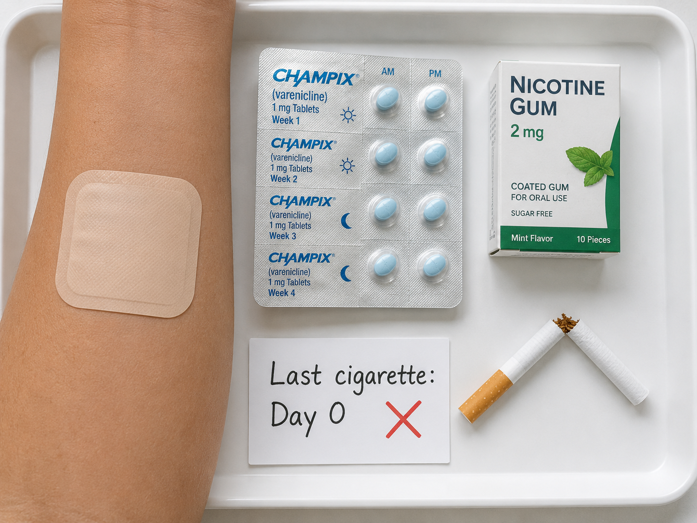
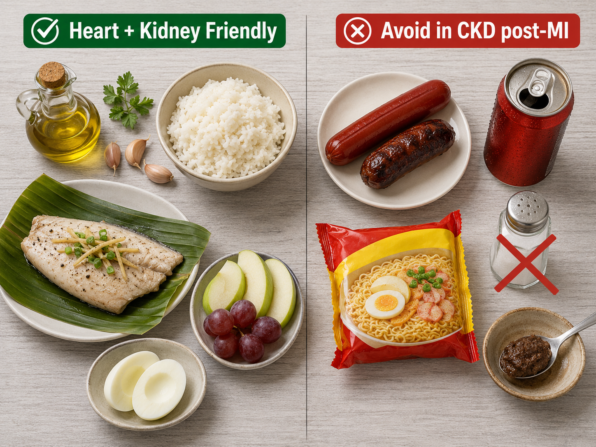

CKD and Acute MI — A High-Stakes Intersection
CKD at Acute MI — Isang Kritikal na Pagtatagpo
CKD ug Acute MI — Usa ka High-Stakes nga Intersection
CKD at Acute MI — Isang Kritikal na Pagtatagpo
CKD patients have 10–30× higher cardiovascular mortality than the general population. When a heart attack occurs, they face a compounded risk: the MI itself causes myocardial damage, while CKD simultaneously impairs healing, limits medication options, increases bleeding risk from antiplatelet therapy, and creates competing management priorities with dialysis. 30-day mortality after MI in dialysis patients is 40–60% — compared to 5–8% in the general population.
Ang mga pasyenteng may CKD ay may 10–30× na mas mataas na panganib ng pagkamatay dahil sa sakit sa puso kumpara sa karaniwang populasyon. Kapag nangyari ang atake sa puso, nahaharap sila sa pinagsama-samang panganib: ang MI (Myocardial Infarction — atake sa puso) mismo ay sumisira sa kalamnan ng puso, habang ang CKD naman ay nakakasagabal sa paggaling, nililimitahan ang mga pagpipilian sa gamot, pinapataas ang panganib ng pagdurugo mula sa antiplatelet therapy, at lumilikha ng mga magkakasalungat na prayoridad sa pangangasiwa kasama ang dialysis. Ang 30-araw na mortality pagkatapos ng MI sa mga pasyenteng nagda-dialysis ay 40–60% — kumpara sa 5–8% sa karaniwang populasyon.
Ang mga pasyente nga CKD adunay 10–30× mas taas nga cardiovascular mortality (kamatayon tungod sa sakit sa kasingkasing) kaysa sa kinatibuk-ang populasyon. Kung mahitabo ang atake sa kasingkasing, nag-atubang sila og compounded nga risgo: ang MI mismo nagpahinabo og myocardial damage (kadaot sa kaunoran sa kasingkasing), samtang ang CKD dungan nga nagpabag-o sa pag-ayo, naglimita sa mga opsyon sa tambal, nagdugang sa risgo sa pagdugo gikan sa antiplatelet therapy, ug nagmugna og nagkompetensya nga mga prayoridad sa pagdumala kauban ang dialysis. Ang 30-adlaw nga mortality human sa MI sa mga pasyente nga dialysis kay 40–60% — kung ikumpara sa 5–8% sa kinatibuk-ang populasyon.
Deng pasyenteng may CKD ya may 10–30× na mas matas a panganib ning pagkamatay dahil king sakit sa pusu kumpara king karaniwang populasyon. Nung nangyari ing atake sa pusu, nahaharap sila sa pinagsama-samang panganib: ing MI (Myocardial Infarction — atake sa pusu) mismo ya sumisira sa kalamnan nining pusu, habang ing CKD naman ya nakakasagabal sa paggaling, nililimitahan deng pagpipilian king gamut, pinapataas ing panganib ning pagdurugo mula sa antiplatelet therapy, at lumilikha ning deng magkakasalungat na prayoridad sa pangangasiwa kasama ing dialysis. Ing 30-aldo na mortality kapabanuan ning MI sa deng pasyenteng nagda-dialysis ya 40–60% — kumpara king 5–8% sa karaniwang populasyon.

The 30-day post-MI mortality rate in dialysis patients is 40–60% — roughly 8× higher than the general population. The leading causes of death are recurrent MI, sudden cardiac death from arrhythmia, and heart failure.
Ang 30-araw na mortality rate pagkatapos ng MI sa mga pasyenteng nagda-dialysis ay 40–60% — humigit-kumulang 8× na mas mataas kaysa sa karaniwang populasyon. Ang mga pangunahing sanhi ng pagkamatay ay paulit-ulit na MI, biglaang cardiac death mula sa arrhythmia (abnormal na tibok ng puso), at heart failure.
Ang 30-adlaw nga post-MI mortality rate sa mga pasyente nga dialysis kay 40–60% — mga 8× mas taas kaysa sa kinatibuk-ang populasyon. Ang nanguna nga hinungdan sa kamatayon mao ang balik-balik nga MI, kalit nga cardiac death gikan sa arrhythmia (dili regular nga tibok sa kasingkasing), ug heart failure.
Ing 30-aldo na mortality rate kapabanuan ning MI sa deng pasyenteng nagda-dialysis ya 40–60% — humigit-kumulang 8× na mas mataas kaysa sa karaniwang populasyon. Deng pangunahing sanhi ning pagkamatay ya paulit-ulit na MI, biglaang cardiac death mula sa arrhythmia (abnormal na tibok nining pusu), at heart failure.
CKD-specific MI challenges
Mga hamong partikular sa CKD sa MI
Mga hagit sa MI espesipiko sa CKD
Deng hamong partikular sa CKD sa MI
Troponin is chronically elevated in CKD from subclinical myocardial stress — making acute MI diagnosis harder (use serial troponin rise, not single value). Contrast dye for angiography risks contrast-induced AKI in non-dialysis CKD patients. Dialysis patients can safely receive contrast (they are dialyzable out). RAAS inhibitors must be continued but monitored for hyperkalemia. NSAIDs absolutely contraindicated.
Ang troponin ay palaging mataas sa CKD dahil sa subclinical myocardial stress — kaya mas mahirap i-diagnose ang acute MI (gumamit ng serial troponin rise, hindi iisang halaga lamang). Ang contrast dye para sa angiography ay may panganib na magdulot ng contrast-induced AKI sa mga pasyenteng CKD na hindi nagda-dialysis. Ang mga pasyenteng nagda-dialysis ay ligtas na makatanggap ng contrast (maaari itong alisin sa pamamagitan ng dialysis). Ang mga RAAS inhibitors ay dapat ipagpatuloy ngunit bantayan para sa hyperkalemia (mataas na potassium). Ang mga NSAIDs ay ganap na bawal.
Ang Troponin kanunay nga elevated sa CKD gikan sa subclinical myocardial stress — nga nagpalisod sa pag-diagnose sa acute MI (gamita ang serial troponin rise, dili single value). Ang contrast dye para sa angiography adunay risgo sa contrast-induced AKI sa mga pasyente nga CKD nga dili nag-dialysis. Ang mga pasyente nga nag-dialysis luwas nga makadawat og contrast (ma-dialyze kini pagawas). Ang RAAS inhibitors kinahanglan ipadayon pero bantayan para sa hyperkalemia (taas nga potassium). Ang NSAIDs hingpit nga kontraindikado.
Ing troponin ya papirming mataas sa CKD dahil king subclinical myocardial stress — kaya mas mahirap i-diagnose ing acute MI (gumamit ning serial troponin rise, ali imetung a halaga lamang). Ing contrast dye para king angiography ya may panganib na magdulot ning contrast-induced AKI sa deng pasyenteng CKD na ali nagda-dialysis. Deng pasyenteng nagda-dialysis ya ligtas na makatanggap ning contrast (maaari ining alisin sa pamamagitan ning dialysis). Deng RAAS inhibinirs ya dapat ipagpatuloy ngarud bantayan para king hyperkalemia (matas a potassium). Deng NSAIDs ya ganap na bawal.
Cardiac rehabilitation evidence in CKD
Ebidensya ng cardiac rehabilitation sa CKD
Ebidensya sa cardiac rehabilitation sa CKD
Ebidensya ning cardiac rehabilitation sa CKD
Formal cardiac rehabilitation (CR) reduces recurrent MI by 25% and all-cause mortality by 20–30% in the general population. Despite underrepresentation in trials, CKD patients benefit equally — yet CR referral rates in CKD are only 30–40% of the general population rate. Every CKD patient surviving an acute MI should be actively referred to and enrolled in a structured cardiac rehabilitation program.
Ang pormal na cardiac rehabilitation (CR) ay nagpapababa ng paulit-ulit na MI ng 25% at lahat ng sanhi ng pagkamatay ng 20–30% sa karaniwang populasyon. Sa kabila ng kakulangan ng representasyon sa mga pag-aaral, ang mga pasyenteng may CKD ay parehong nakikinabang — ngunit ang rate ng CR referral sa CKD ay 30–40% lamang ng rate sa karaniwang populasyon. Bawat pasyenteng may CKD na nakaligtas sa acute MI ay dapat na aktibong i-refer at i-enroll sa isang structured cardiac rehabilitation program.
Ang pormal nga cardiac rehabilitation (CR) nagpamenos sa balik-balik nga MI og 25% ug all-cause mortality og 20–30% sa kinatibuk-ang populasyon. Bisan sa kakulang sa representasyon sa mga trials, ang mga pasyente nga CKD pareho ang benepisyo — pero ang CR referral rates sa CKD kay 30–40% lang sa rate sa kinatibuk-ang populasyon. Ang matag pasyente nga CKD nga nakabuhi sa acute MI kinahanglan aktibo nga i-refer ug i-enroll sa structured cardiac rehabilitation program.
Ing pormal na cardiac rehabilitation (CR) ya nagpapababa ning paulit-ulit na MI ning 25% at lahat ning sanhi ning pagkamatay ning 20–30% sa karaniwang populasyon. Sa kabila ning kakulangan ning representasyon sa deng pag-aaral, deng pasyenteng may CKD ya parehong nakikinabang — ngarud ing rate ning CR referral sa CKD ya 30–40% lamang ning rate sa karaniwang populasyon. Bawat pasyenteng may CKD na nakaligtas sa acute MI ya dapat na aktibong i-refer at i-enroll sa metung a structured cardiac rehabilitation program.
Acute MI Management — CKD-Specific Considerations
Pamamahala ng Acute MI — Mga Konsiderasyong Partikular sa CKD
Acute MI Management — Mga Konsiderasyon Espesipiko sa CKD
Pamamahala ning Acute MI — Deng Konsiderasyong Partikular sa CKD
| Intervention | General Population | CKD / Dialysis Modification |
|---|---|---|
| Reperfusion (PCI) | Primary PCI within 90 min for STEMI | Same — do not delay PCI for CKD. Dialysis patients: contrast is safe (dialyzable). Non-dialysis CKD Stage 3–4: N-acetylcysteine + IV hydration pre-procedure; avoid high-osmolar contrast. |
| Aspirin | 325 mg loading → 75–100 mg daily | Same dose. Bleeding risk is higher in CKD (uremic platelet dysfunction) — monitor for GI bleeding closely. PPI co-prescription strongly recommended. |
| P2Y12 inhibitor (clopidogrel/ticagrelor) | Dual antiplatelet for 12 months post-ACS | Clopidogrel preferred over ticagrelor in dialysis (ticagrelor can cause dyspnea; less data). Prasugrel contraindicated if eGFR <60 (increased bleeding). Dual antiplatelet duration may be shortened to 6 months in high bleeding-risk CKD patients. |
| ACE inhibitor / ARB | Start within 24 hrs if EF reduced | Start at lowest dose, monitor K+ and creatinine closely. Hold if K+ >5.5 mEq/L. Dialysis patients: ACE/ARB for cardiorenal protection regardless of eGFR. |
| Beta-blocker | Metoprolol or carvedilol — start within 24 hrs | Same — CKD patients benefit as much as general population. Carvedilol preferred for CKD due to additional alpha-blocking (antihypertensive effect). Start low — atenolol accumulates in CKD (use metoprolol or carvedilol instead). |
| Statin | High-intensity statin immediately | Rosuvastatin 10–20 mg (renally safe — hepatically cleared). Atorvastatin 40–80 mg equally effective. Target LDL <55 mg/dL (ACC/AHA 2026 very high-risk). Do NOT withhold statins in CKD post-MI. |
| Heparin / anticoagulation | UFH during PCI | UFH preferred over LMWH in Stage 4–5 CKD (LMWH accumulates). Dialysis: UFH standard. Bivalirudin if HIT history. Monitor anti-Xa if LMWH used in non-dialysis CKD. |
| Fluid management | IV fluids as needed | Restrict fluid aggressively in oliguric/anuric patients. Pulmonary edema risk is very high. Consider early HD/CRRT for fluid removal if pulmonary congestion develops post-MI in CKD. |
Phase I — In-Hospital Cardiac Rehabilitation
Phase I — In-Hospital Cardiac Rehabilitation
Phase I — In-Hospital Cardiac Rehabilitation
Phase I — In-Hospital Cardiac Rehabilitation
Stabilization, Education, and Gentle Mobilization
Stabilization, Edukasyon, at Dahan-dahang Paggalaw
Stabilization, Edukasyon, ug Hinay nga Mobilization
Stabilization, Edukasyon, at Dahan-dahang Paggalaw
Goals: Prevent deconditioning, reduce anxiety, begin patient education, identify and manage CKD-specific complications (arrhythmia, fluid overload, electrolytes), coordinate with dialysis team.
Mga Layunin: Pigilan ang deconditioning (pagpapahina ng katawan dahil sa kawalan ng aktibidad), bawasan ang pagkabalisa, simulan ang edukasyon ng pasyente, tukuyin at pangasiwaan ang mga komplikasyong partikular sa CKD (arrhythmia, labis na likido, electrolytes), makipag-ugnayan sa dialysis team.
Mga Tumong: Pugngan ang deconditioning, minos-an ang kabalaka, sugdan ang edukasyon sa pasyente, ilhan ug dumahon ang mga komplikasyon espesipiko sa CKD (arrhythmia, fluid overload, electrolytes), koordinasyon sa dialysis team.
Deng Layunin: Pigilan ing deconditioning (pagpapahina nining bangkî dahil king kaalan ning aktibidad), bawasan ing pagkabalisa, simulan ing edukasyon ning pasyente, tukuyin at pangasiwaan deng komplikasyong partikular sa CKD (arrhythmia, labis na likido, electrolytes), makipag-ugnayan king dialysis team.
- Day 1–2: Complete bed rest. Passive range of motion only. Deep breathing exercises (diaphragmatic, 4–6 cycles hourly). Ankle pumps to prevent DVT.
- Araw 1–2: Kumpletong bed rest. Passive range of motion lamang. Mga ehersisyo sa malalim na paghinga (diaphragmatic, 4–6 na siklo bawat oras). Ankle pumps para maiwasan ang DVT (pamumuo ng dugo sa ugat).
- Adlaw 1–2: Kompleto nga bed rest. Passive range of motion lang. Mga ehersisyo sa lawom nga pagginhawa (diaphragmatic, 4–6 ka cycles matag oras). Ankle pumps para mapugngan ang DVT.
- Aldo 1–2: Kumpletong bed rest. Passive range of motion lamang. Deng ehersisyo sa malalim na paghinga (diaphragmatic, 4–6 na siklo bawat oras). Ankle pumps para maiwasan ing DVT (pamumuo nining daya sa ugat).
- Day 2–3: Dangle legs at bedside. Sit in chair 15–30 minutes twice daily. Walk to bathroom with assistance. Monitor BP and HR with every position change.
- Araw 2–3: Ibitin ang mga binti sa gilid ng kama. Umupo sa silya ng 15–30 minuto dalawang beses araw-araw. Maglakad papunta sa banyo na may tulong. Bantayan ang BP at HR sa bawat pagbabago ng posisyon.
- Adlaw 2–3: Bitay-bitay ang mga tiil sa kilid sa higdaanan. Lingkod sa silya 15–30 minutos kaduha adlaw-adlaw. Lakaw ngadto sa banyo nga may tabang. Bantayi ang BP ug HR sa matag pagbag-o og posisyon.
- Aldo 2–3: Ibitin deng binti sa gilid ning kama. Umupo sa silya ning 15–30 minuto dalawang beses aldo-aldo. Maglakad papunta sa banyo na may tulong. Bantayan ing BP at HR king bawat pagbabago ning posisyon.
- Day 3–4: Short walks in room (30–50 meters). Seated exercises — arm circles, marching in place. Climbing 1 flight stairs as discharge test.
- Araw 3–4: Maikling paglalakad sa kwarto (30–50 metro). Mga ehersisyong nakaupo — pag-ikot ng braso, pag-march sa kinatatayuan. Pag-akyat ng 1 palapag ng hagdan bilang discharge test.
- Adlaw 3–4: Mubo nga paglakaw sa kwarto (30–50 metros). Seated exercises — arm circles, marching in place. Pag-saka og 1 flight sa hagdan isip discharge test.
- Aldo 3–4: Maikling paglalakad sa kwarto (30–50 metro). Deng ehersisyong nakaupo — pag-ikot ning braso, pag-march sa kinatatayuan. Pag-akyat ning 1 palapag ning hagdan bilang discharge test.
- Day 4–5: Walk 100–200 meters with monitoring. Educate on medication adherence, activity restrictions, warning signs, and Phase II enrollment.
- Araw 4–5: Maglakad ng 100–200 metro na may pagmamanman. Turuan tungkol sa tamang pag-inom ng gamot, mga paghihigpit sa aktibidad, mga babala, at pag-enroll sa Phase II.
- Adlaw 4–5: Lakaw og 100–200 metros nga may monitoring. Tudloi bahin sa medication adherence, mga restriksyon sa kalihokan, mga warning signs, ug pag-enroll sa Phase II.
- Aldo 4–5: Maglakad ning 100–200 metro na may pagmamanman. Turuan tungkol sa tamang pag-inom nining gamut, deng paghihigpit sa aktibidad, deng babala, at pag-enroll sa Phase II.
- Dialysis coordination: Avoid HD within 24 hours of PCI. When resuming HD: reduce UFR to ≤8 mL/kg/hr, use cooling dialysate (36°C), avoid large K+ swings, continuous cardiac monitoring during first post-MI HD sessions.
- Koordinasyon sa dialysis: Iwasan ang HD (Hemodialysis) sa loob ng 24 oras pagkatapos ng PCI. Kapag ipinagpatuloy ang HD: bawasan ang UFR sa ≤8 mL/kg/hr, gumamit ng cooling dialysate (36°C), iwasan ang malalaking pagbabago sa K+, tuloy-tuloy na cardiac monitoring sa mga unang post-MI HD sessions.
- Koordinasyon sa dialysis: Likayi ang HD sulod sa 24 oras human sa PCI. Kung ipadayon ang HD: minos-i ang UFR ngadto sa ≤8 mL/kg/hr, gamita ang cooling dialysate (36°C), likayi ang dagko nga K+ swings, padayon nga cardiac monitoring sa unang mga post-MI HD sessions.
- Koordinasyon king dialysis: Iwasan ing HD (Hemodialysis) sa loob ning 24 oras kapabanuan ning PCI. Nung ipinagpatuloy ing HD: bawasan ing UFR sa ≤8 mL/kg/hr, gumamit ning cooling dialysate (36°C), iwasan ing malalaking pagbabago sa K+, tuloy-tuloy na cardiac moniniring sa deng unang post-MI HD sessions.
Contraindications to Phase I exercise — do not mobilize if:
Mga Contraindication sa Phase I exercise — huwag magpagalaw kung:
Mga kontraindikasyon sa Phase I exercise — ayaw i-mobilize kung:
Deng Contraindication sa Phase I exercise — eka magpagalaw nung:
- Resting HR >120 bpm or <50 bpm
- Resting HR na >120 bpm o <50 bpm
- Resting HR >120 bpm o <50 bpm
- Resting HR na >120 bpm o <50 bpm
- Systolic BP >180 mmHg or <90 mmHg at rest
- Systolic BP na >180 mmHg o <90 mmHg habang nagpapahinga
- Systolic BP >180 mmHg o <90 mmHg sa pagpahulay
- Systolic BP na >180 mmHg o <90 mmHg habang nagpapahinga
- New or worsening chest pain in the past 8 hours
- Bago o lumalalang pananakit ng dibdib sa nakalipas na 8 oras
- Bag-o o nagkagrabeng sakit sa dughan sa miaging 8 oras
- Bago o lumalalang pananakit ning dibdib sa nakalipas na 8 oras
- Active pulmonary edema or O₂ saturation <90% on room air
- Aktibong pulmonary edema o O₂ saturation na <90% sa room air
- Aktibo nga pulmonary edema o O₂ saturation <90% sa room air
- Aktibong pulmonary edema o O₂ saturation na <90% sa room air
- New significant arrhythmia (AF with RVR, VT) not yet controlled
- Bagong malubhang arrhythmia (AF with RVR, VT) na hindi pa kontrolado
- Bag-o nga significante nga arrhythmia (AF with RVR, VT) nga wala pa nakontrol
- Bagong malubhang arrhythmia (AF with RVR, VT) na ali pa kontrolado
- Fever >38°C (rule out CRBSI if catheter present)
- Lagnat na >38°C (suriin kung may CRBSI kung may catheter)
- Hilanat >38°C (i-rule out ang CRBSI kung adunay catheter)
- Lagnat na >38°C (suriin nung may CRBSI nung may catheter)
- Serum K+ <3.0 or >6.0 mEq/L — correct first
- Serum K+ na <3.0 o >6.0 mEq/L — itama muna
- Serum K+ <3.0 o >6.0 mEq/L — ayohon una
- Serum K+ na <3.0 o >6.0 mEq/L — itama muna

Phase II — Early Outpatient Recovery
Phase II — Maagang Pagpapagaling Bilang Outpatient
Phase II — Unang Panahon sa Pag-ayo Didto sa Gawas
Phase II — Maagang Pagpapagaling Bilang Outpatient
Progressive Walking Program and Lifestyle Modification
Paisa-isang Pagpapalawak ng Programa sa Paglalakad at Pagbabago ng Pamumuhay
Programa sa Paglakaw nga Nagkadako ug Pag-usab sa Kinabuhi
Paisa-metung a Pagpapalawak ning Programa sa Paglalakad at Pagbabago ning Pamumuhay
Goals: Build walking tolerance from 5–10 minutes to 20–30 minutes, establish medication adherence, begin dietary changes, identify depression (very common post-MI in CKD), and prepare for formal Phase III cardiac rehab.
Mga Layunin: Palakasin ang kakayahang maglakad mula 5–10 minuto hanggang 20–30 minuto, tiyaking nainom ang mga gamot sa tamang oras, simulan ang pagbabago ng pagkain, alamin kung may depression o matinding kalungkutan (karaniwang nangyayari pagkatapos ng MI sa mga may CKD), at maghanda para sa pormal na Phase III cardiac rehab.
Mga Tumong: Padak-on ang kakayahan sa paglakaw gikan sa 5–10 minutos ngadto sa 20–30 minutos, seguradohon ang husto nga pag-inom sa tambal, sugdan ang pag-usab sa pagkaon, ilhon ang depression o kasubo (kasagaran kaayo pagkahuman sa MI sa mga tawo nga may CKD), ug mag-andam para sa pormal nga Phase III cardiac rehab.
Deng Layunin: Palakasin ing kakayahang maglakad mula 5–10 minuto anggang 20–30 minuto, tiyaking nainom dening gamut sa tamang oras, simulan ing pagbabago nining pamangan, alamin nung may depression o matinding kalungkutan (karaniwang nangyayari kapabanuan ning MI sa deng may CKD), at maghanda para king pormal na Phase III cardiac rehab.
- Week 1: Walk 5–10 minutes twice daily at slow pace. Rest for 5 minutes between walks. Do not carry anything heavier than 2–3 kg. No driving. No stairs except as necessary. Rest if any chest discomfort, dizziness, or shortness of breath.
- Week 1: Maglakad ng 5–10 minuto, dalawang beses sa isang araw sa mabagal na bilis. Magpahinga ng 5 minuto sa pagitan ng mga paglalakad. Huwag magbuhat ng anumang bagay na mas mabigat sa 2–3 kg. Bawal magmaneho. Bawal umakyat ng hagdan maliban kung kinakailangan. Magpahinga kung may anumang kirot sa dibdib, nahihilo, o hirap huminga.
- Semana 1: Maglakaw og 5–10 minutos kaduha matag adlaw sa hinay nga lakang. Magpahulay og 5 minutos taliwala sa mga lakaw. Ayaw pagdala og mas bug-at sa 2–3 kg. Ayaw pagmaneho. Ayaw pagsaka og hagdan gawas kung kinahanglan gyud. Magpahulay kung adunay kasakit sa dughan, kalipong, o kakapoy sa pagginhawa.
- Week 1: Maglakad ning 5–10 minuto, dalawang beses sa metung a aldo sa mabagal na bilis. Magpahinga ning 5 minuto sa pagitan ning deng paglalakad. Eka magbuhat ning anumang bagay na mas mabigat sa 2–3 kg. Bawal magmaneho. Bawal umakyat ning hagdan maliban nung kinakailangan. Magpahinga nung may anumang kirot sa dibdib, nahihilo, o hirap huminga.
- Week 2: Increase to 10–15 minutes per walk, twice daily. Can begin light household activities (cooking, light cleaning). Avoid anything causing breath-holding or straining (Valsalva — raises BP acutely).
- Week 2: Dagdagan sa 10–15 minuto bawat paglalakad, dalawang beses sa isang araw. Maaari nang magsimula ng magagaang gawaing bahay (pagluluto, magaang paglilinis). Iwasan ang anumang gawain na kailangang pigilan ang paghinga o pagpuwersa ng katawan (Valsalva — biglaang nagtataas ng BP).
- Semana 2: Dugangan ngadto sa 10–15 minutos matag lakaw, kaduha matag adlaw. Mahimo na ang gaan nga buluhaton sa balay (pagluto, gaan nga paglimpyo). Likayi ang bisan unsa nga makapugong sa imong ginhawa o makapahago pag-ayo (Valsalva — makapataas kini sa BP sa kalit).
- Week 2: Dagdagan sa 10–15 minuto bawat paglalakad, dalawang beses sa metung a aldo. Maaari nang magsimula ning magagaang gawaing bale (pagluluto, magaang paglilinis). Iwasan ing anumang gawain na kailangang pigilan ing paghinga o pagpuwersa nining bangkî (Valsalva — biglaang nagtataas ning BP).
- Week 3: 15–20 minutes continuous walking once daily at comfortable pace (RPE 3–4). Light stretching program. May begin some social activities. Resume sexual activity only after clearance from cardiologist (typically 4–6 weeks post-STEMI).
- Week 3: 15–20 minuto na tuloy-tuloy na paglalakad isang beses sa isang araw sa komportableng bilis (RPE 3–4). Magaang pag-uunat. Maaari nang magsimula ng ilang gawaing panlipunan. Maari lang makipagtalik matapos makahingi ng pahintulot mula sa cardiologist (karaniwang 4–6 na linggo matapos ang STEMI).
- Semana 3: 15–20 minutos nga walay hunong nga paglakaw kausa matag adlaw sa komportable nga lakang (RPE 3–4). Gaan nga programa sa pag-stretch. Mahimo na ang pipila ka kalihokan uban sa uban nga tawo. Mahimo lang mobalik sa sexual activity pagkahuman og pagtugot sa cardiologist (kasagaran 4–6 ka semana pagkahuman sa STEMI).
- Week 3: 15–20 minuto na tuloy-tuloy na paglalakad metung a beses sa metung a aldo sa komportableng bilis (RPE 3–4). Magaang pag-uunat. Maaari nang magsimula ning ilang gawaing panlipunan. Maari lang makipagtalik matapos makahingi ning pahintulot mula sa cardiologist (karaniwang 4–6 na lutu matapos ing STEMI).
- HD patients: Walking on non-HD days. Do not exercise within 2 hours of HD. Post-HD rest of 1 hour before any activity. Monitor for IDH-related dizziness and fatigue — reduce walking on HD days.
- Mga pasyenteng nagda-dialysis (HD): Maglakad sa mga araw na walang HD. Huwag mag-ehersisyo sa loob ng 2 oras pagkatapos ng HD. Magpahinga ng 1 oras pagkatapos ng HD bago gumawa ng anumang aktibidad. Bantayan ang pagkahilo at pagkahapo na dulot ng IDH (pagbaba ng presyon habang nagda-dialysis) — bawasan ang paglalakad sa mga araw ng HD.
- Mga pasyente sa HD: Maglakaw sa mga adlaw nga walay HD. Ayaw pag-ehersisyo sulod sa 2 oras pagkahuman sa HD. Magpahulay og 1 oras pagkahuman sa HD ayha mag-ehersisyo. Bantayi ang kalipong ug kakapoy tungod sa IDH — gamaya ang paglakaw sa mga adlaw sa HD.
- Deng pasyenteng nagda-dialysis (HD): Maglakad sa dening aldo na alang HD. Eka mag-ehersisyo sa loob ning 2 oras kapabanuan ning HD. Magpahinga ning 1 oras kapabanuan ning HD bago gumawa ning anumang aktibidad. Bantayan ing pagkahilo at pagkahapo na dulot ning IDH (pagbaba nining presyon habang nagda-dialysis) — bawasan ing paglalakad sa dening aldo ning HD.
- Monitoring: Home BP twice daily. HR before and after walks. Weight daily (fluid monitoring). Record any symptoms during exercise in a diary to share at clinic visit.
- Pagmamanman: Magpa-check ng BP sa bahay dalawang beses sa isang araw. HR bago at pagkatapos maglakad. Timbang araw-araw (para sa pagsubaybay ng tubig sa katawan). Itala ang anumang sintomas habang nag-eehersisyo sa isang diary upang maipakita sa susunod na checkup.
- Pag-monitor: Home BP kaduha matag adlaw. HR ayha ug pagkahuman sa paglakaw. Timbang matag adlaw (para sa pag-monitor sa tubig sa lawas). Isulat ang bisan unsang sintomas panahon sa ehersisyo sa diary aron ipakita sa clinic visit.
- Pagmamanman: Magpa-check ning BP king bale dalawang beses sa metung a aldo. HR bago at kapabanuan maglakad. Timbaning aldo-aldo (para king pagsubaybay nining danum sa bangkî). Itala ing anumang sintomas habang nag-eehersisyo sa metung a diary para maipakita sa susunod na checkup.
Depression after MI in CKD — screen at every visit
Depression pagkatapos ng MI sa mga may CKD — suriin sa bawat checkup
Depression pagkahuman sa MI sa CKD — i-check matag bisita
Depression kapabanuan ning MI sa deng may CKD — suriin king bawat checkup
Major depression affects 20–30% of post-MI patients and up to 40% of dialysis patients. The combination is devastating for adherence, medication compliance, and survival. Screen with the PHQ-9 at every outpatient visit for 3 months post-MI. Cardiac rehabilitation itself is one of the most effective antidepressants — physical activity, social interaction, and goal-setting reduce depression scores by 30–40%. For pharmacotherapy: SSRIs (sertraline, escitalopram) are safe in CKD. Avoid TCAs (QTc prolongation + anticholinergic effects). Adjust doses for eGFR.
Ang matinding depression ay umaapekto sa 20–30% ng mga pasyenteng kakapagdaan lang ng MI at hanggang 40% ng mga pasyenteng nagda-dialysis. Ang kombinasyong ito ay nakapipinsala sa pagsunod sa mga tagubilin, pag-inom ng gamot, at sa pangkalahatang kalusugan. Gamitin ang PHQ-9 sa bawat checkup bilang outpatient sa loob ng 3 buwan matapos ang MI. Ang cardiac rehabilitation mismo ay isa sa mga pinaka-epektibong lunas sa depression — ang pisikal na aktibidad, pakikisalamuha, at pagtatakda ng mga layunin ay nagpapababa ng depression scores ng 30–40%. Para sa gamutan: ang SSRIs (sertraline, escitalopram) ay ligtas sa CKD. Iwasan ang TCAs (dahil sa QTc prolongation at anticholinergic effects). Ayusin ang dosis batay sa eGFR.
Ang major depression makaapekto sa 20–30% sa mga pasyente pagkahuman sa MI ug hangtod 40% sa mga dialysis patients. Ang kombinasyon niini grabe kaayo ang epekto sa pagsunod sa tambal ug sa kinabuhi. I-screen gamit ang PHQ-9 matag outpatient visit sulod sa 3 ka bulan pagkahuman sa MI. Ang cardiac rehabilitation mismo usa sa labing epektibo nga kontra sa depression — ang pisikal nga kalihokan, pakig-uban sa uban, ug pagbutang og tumong makapaubos sa depression scores og 30–40%. Para sa tambal: ang SSRIs (sertraline, escitalopram) luwas sa CKD. Likayi ang TCAs (QTc prolongation + anticholinergic effects). I-adjust ang dosis base sa eGFR.
Ing matinding depression ya umaapekto sa 20–30% ning deng pasyenteng kanungdaan lang ning MI at anggang 40% ning deng pasyenteng nagda-dialysis. Ing kombinasyong ini ya nakapipinsala sa pagsunod sa deng tagubilin, pag-inom nining gamut, at sa pangkalahatang kalusugan. Gamitin ing PHQ-9 king bawat checkup bilang outpatient sa loob ning 3 bulan matapos ing MI. Ing cardiac rehabilitation mismo ya isa king deng pinaka-epektibong lunas sa depression — ing pisikal na aktibidad, pakikisalamuha, at pagtatakda ning deng layunin ya nagpapababa ning depression scores ning 30–40%. Para king gamutan: ing SSRIs (sertraline, escitalopram) ya ligtas sa CKD. Iwasan ing TCAs (dahil king QTc prolongation at anticholinergic effects). Ayusin ing dosis batay sa eGFR.
Phase III — Supervised Exercise Cardiac Rehabilitation
Phase III — Supervised Exercise Cardiac Rehabilitation o Ehersisyong may Pangangasiwa
Phase III — Supervised Exercise Cardiac Rehabilitation nga Giyahan
Phase III — Supervised Exercise Cardiac Rehabilitation o Ehersisyong may Pangangasiwa
Structured, Monitored Exercise with ECG Telemetry
Nakabalangkas at Minomonitor na Ehersisyo na may ECG Telemetry (tuloy-tuloy na pagbabantay ng tibok ng puso)
Striktado ug Gibantayan nga Ehersisyo uban sa ECG Telemetry
Nakabalangkas at Minomoninir na Ehersisyo na may ECG Telemetry (tuloy-tuloy na pagbabantay ning tibok nining pusu)
Goals: Improve cardiopulmonary fitness (VO₂ max), reduce resting HR and BP, improve lipid profile, reduce depression, educate on risk factor modification, return to work and normal activity.
Mga Layunin: Pagbutihin ang lakas ng puso at baga (VO₂ max), babaan ang HR at BP habang nagpapahinga, pagbutihin ang antas ng kolesterol, bawasan ang depression, turuan tungkol sa pagbabago ng mga panganib na salik, at bumalik sa trabaho at normal na gawain.
Mga Tumong: Pauswagon ang fitness sa kasingkasing ug baga (VO₂ max), paubsan ang resting HR ug BP, pauswagon ang lipid profile, paubsan ang depression, tudloan bahin sa pag-usab sa mga risk factors, mobalik sa trabaho ug normal nga kalihokan.
Deng Layunin: Pagbutihin ing lakas nining pusu at baga (VO₂ max), babaan ing HR at BP habang nagpapahinga, pagbutihin ing antas ning kolesterol, bawasan ing depression, turuan tungkol sa pagbabago ning deng panganib na salik, at bumalik king obran at normal na gawain.
- Warm-up (10 min): Slow walking, light stretching, breathing exercises — identical to CKD exercise guide Phase 1–2.
- Pag-iinit o warm-up (10 min): Mabagal na paglalakad, magaang pag-uunat, ehersisyong paghinga — katulad ng CKD exercise guide Phase 1–2.
- Pag-init (10 min): Hinay nga paglakaw, gaan nga pag-stretch, mga ehersisyo sa pagginhawa — pareha sa CKD exercise guide Phase 1–2.
- Pag-iinit o warm-up (10 min): Mabagal na paglalakad, magaang pag-uunat, ehersisyong paghinga — katulad ning CKD exercise guide Phase 1–2.
- Aerobic training (20–30 min): Walking, stationary cycling, or elliptical at RPE 3–5 (40–60% heart rate reserve). In CKD, use the Borg RPE scale — heart rate targets may be unreliable if on beta-blockers (HR is blunted). Target: able to speak in sentences, mildly breathless.
- Aerobic training (20–30 min): Paglalakad, pagbibisikleta sa stationary bike, o elliptical sa RPE 3–5 (40–60% heart rate reserve). Sa CKD, gamitin ang Borg RPE scale — maaaring hindi tumpak ang target na heart rate kung umiinom ng beta-blockers (humihina ang HR response). Target: kayang magsalita ng pangungusap, bahagyang hingal.
- Aerobic training (20–30 min): Paglakaw, stationary cycling, o elliptical sa RPE 3–5 (40–60% heart rate reserve). Sa CKD, gamita ang Borg RPE scale — ang heart rate targets dili masaligan kung nag-inom og beta-blockers (ang HR dili kaayo motaas). Target: makasulti ka og mga sentence, gamay lang ang hangos.
- Aerobic training (20–30 min): Paglalakad, pagbibisikleta sa stationary bike, o elliptical sa RPE 3–5 (40–60% heart rate reserve). Sa CKD, gamitin ing Borg RPE scale — maaaring ali tumpak ing target na heart rate nung umiinom ning beta-blockers (humihina ing HR response). Target: kayang magsalita ning pangungusap, bahagyang hingal.
- Resistance training (15 min): Light resistance bands or weights × 2 per week. Exhale on exertion — never hold breath. Avoid fistula arm for upper limb exercises with weights.
- Resistance training (15 min): Magaang resistance bands o weights × 2 beses bawat linggo. Huminga palabas kapag nagpupuwersa — huwag kailanman pigilan ang hininga. Iwasan ang braso na may fistula (daanan ng dugo para sa dialysis) kapag gumagamit ng weights.
- Resistance training (15 min): Gaan nga resistance bands o weights × 2 ka beses matag semana. Ginhawa pagawas kung magpahago — ayaw gyud pugngi ang ginhawa. Likayi ang bukton nga may fistula para sa upper limb exercises gamit ang weights.
- Resistance training (15 min): Magaang resistance bands o weights × 2 beses bawat lutu. Huminga palabas nung nagpupuwersa — eka kailanman pigilan ing hininga. Iwasan ing braso na may fistula (daanan nining daya para king dialysis) nung gumagamit ning weights.
- Cool-down (10 min): Slow walking, full-body stretching, relaxation breathing.
- Paglamig o cool-down (10 min): Mabagal na paglalakad, buong-katawang pag-uunat, ehersisyong pang-relax sa paghinga.
- Pagpahulay (10 min): Hinay nga paglakaw, pag-stretch sa tibuok lawas, relaxation breathing.
- Paglamig o cool-down (10 min): Mabagal na paglalakad, buong-bangkîg pag-uunat, ehersisyong pang-relax sa paghinga.
- HD patients specifically: Schedule CR sessions on non-HD days whenever possible. If unavoidable on HD day, conduct CR session at least 3 hours after HD completion. Intradialytic cycling (pedaling during HD) is an excellent adjunct — ask your dialysis center if available.
- Partikular para sa mga pasyenteng nagda-dialysis (HD): Mag-iskedyul ng CR sessions sa mga araw na walang HD kung posible. Kung hindi maiiwasan na sa araw ng HD, isagawa ang CR session nang hindi bababa sa 3 oras matapos ang HD. Ang intradialytic cycling (pagpepadyak habang nagda-dialysis) ay isang mahusay na pandagdag — itanong sa inyong dialysis center kung available ito.
- Para gyud sa mga HD patients: I-schedule ang CR sessions sa mga adlaw nga walay HD kung mahimo. Kung dili malikayan sa adlaw sa HD, buhata ang CR session labing menos 3 oras pagkahuman sa HD. Ang intradialytic cycling (pagpedal panahon sa HD) maayo kaayo nga dugang — pangutan-a ang imong dialysis center kung available.
- Partikular para king deng pasyenteng nagda-dialysis (HD): Mag-iskedyul ning CR sessions sa dening aldo na alang HD nung posible. Nung ali maiiwasan na sa aldo ning HD, isagawa ing CR session nang ali bababa sa 3 oras matapos ing HD. Ing intradialytic cycling (pagpepadyak habang nagda-dialysis) ya metung a mahusay na pandagdag — itanong sa inyong dialysis center nung available ini.
- CKD-specific monitoring during each session: BP and HR pre-exercise, every 15 minutes during, and 15 minutes post-exercise. Continuous ECG telemetry for first 12 sessions minimum. Weight before and after (fluid management). Glucose if diabetic.
- Pagmamanman na partikular sa CKD sa bawat session: BP at HR bago mag-ehersisyo, bawat 15 minuto habang nag-eehersisyo, at 15 minuto pagkatapos. Tuloy-tuloy na ECG telemetry para sa unang 12 sessions minimum. Timbang bago at pagkatapos (pamamahala ng tubig sa katawan). Asukal sa dugo kung diabetic.
- Pag-monitor nga espesipiko sa CKD matag session: BP ug HR ayha mag-ehersisyo, matag 15 minutos panahon, ug 15 minutos pagkahuman. Continuous ECG telemetry para sa unang 12 ka sessions labing menos. Timbang ayha ug pagkahuman (fluid management). Glucose kung diabetic.
- Pagmamanman na partikular sa CKD king bawat session: BP at HR bago mag-ehersisyo, bawat 15 minuto habang nag-eehersisyo, at 15 minuto kapabanuan. Tuloy-tuloy na ECG telemetry para king unang 12 sessions minimum. Timbang bago at kapabanuan (pamamahala nining danum sa bangkî). Asukal sa daya nung diabetic.

Beta-blockers blunt the heart rate response to exercise — a patient on carvedilol may only reach 90–100 bpm at maximal effort. Target HR zones based on age are therefore unreliable. The RPE (Rate of Perceived Exertion) scale is the gold standard for exercise prescription in post-MI CKD patients on beta-blockers.
Ang beta-blockers ay humihina sa pagtugon ng heart rate sa ehersisyo — ang isang pasyenteng umiinom ng carvedilol ay maaaring umabot lamang ng 90–100 bpm sa pinakamataas na pagsisikap. Samakatuwid, ang target na HR zones batay sa edad ay hindi mapagkakatiwalaan. Ang RPE (Rate of Perceived Exertion) scale o sukat ng nadaramang pagsisikap ang pinakatumpak na paraan ng pagrereseta ng ehersisyo sa mga post-MI CKD patients na umiinom ng beta-blockers.
Ang beta-blockers makapuypoy sa heart rate response sa ehersisyo — ang pasyente nga nag-inom og carvedilol basin makaabot lang og 90–100 bpm sa pinakadako nga paghago. Busa, ang target HR zones base sa edad dili kasaligan. Ang RPE (Rate of Perceived Exertion) scale mao ang gold standard para sa exercise prescription sa mga post-MI CKD patients nga nag-inom og beta-blockers.
Ing beta-blockers ya humihina sa pagtugon ning heart rate sa ehersisyo — ing metung a pasyenteng umiinom ning carvedilol ya maaaring umabot lamang ning 90–100 bpm sa pinakamatas a pagsisikap. Samakatuwid, ing target na HR zones batay sa edad ya ali mapagkakatialaan. Ing RPE (Rate of Perceived Exertion) scale o sukat ning nadaramang pagsisikap ing pinakatumpak na paraan ning pagrereseta ning ehersisyo sa deng post-MI CKD patients na umiinom ning beta-blockers.
Phase IV — Long-Term Maintenance
Phase IV — Pangmatagalang Pagpapanatili
Phase IV — Long-Term Maintenance
Phase IV — Pangmatagalang Pagpapanatili
Lifelong Physical Activity and Risk Factor Control
Panghabambuhay na Pisikal na Aktibidad at Pagkontrol ng mga Panganib na Salik
Kinabuhi-hangtod nga Pisikal nga Kalihokan ug Pagkontrol sa Risk Factors
Panghabambiye na Pisikal na Aktibidad at Pagkontrol ning deng Panganib na Salik
Goals: Maintain cardiopulmonary fitness gains, sustain medication adherence, manage all cardiovascular risk factors, prevent recurrent MI, and integrate exercise into HD schedule.
Mga Layunin: Panatilihin ang mga nakamit sa lakas ng puso at baga, ipagpatuloy ang tamang pag-inom ng gamot, pamahalaan ang lahat ng cardiovascular risk factors, maiwasan ang muling pagkakaroon ng MI, at isama ang ehersisyo sa iskedyul ng HD.
Mga Tumong: Tipigan ang mga na-angkon nga fitness sa kasingkasing ug baga, padayonon ang husto nga pag-inom sa tambal, kontrolon ang tanang cardiovascular risk factors, pugngan ang balik-balik nga MI, ug isumpay ang ehersisyo sa HD schedule.
Deng Layunin: Panatilihin deng nakamit sa lakas nining pusu at baga, ipagpatuloy ing tamang pag-inom nining gamut, pamahalaan ing lahat ning cardiovascular risk factors, maiwasan ing muling pagkakaroon ning MI, at isama ing ehersisyo sa iskedyul ning HD.
- 150 minutes per week moderate-intensity walking or cycling (30 min × 5 days, or any equivalent combination)
- 150 minuto bawat linggo na katamtamang-intensity na paglalakad o pagbibisikleta (30 min × 5 araw, o anumang katumbas na kombinasyon)
- 150 minutos matag semana nga moderate-intensity nga paglakaw o pagbisikleta (30 min × 5 ka adlaw, o bisan unsang pareha nga kombinasyon)
- 150 minuto bawat lutu na katamtamang-intensity na paglalakad o pagbibisikleta (30 min × 5 aldo, o anumang katumbas na kombinasyon)
- Resistance exercises 2× per week — resistance bands, light weights, or water bottles
- Resistance exercises 2× bawat linggo — resistance bands, magaang weights, o mga bote ng tubig
- Resistance exercises 2× matag semana — resistance bands, gaan nga weights, o mga botelya nga may tubig
- Resistance exercises 2× bawat lutu — resistance bands, magaang weights, o deng bote nining danum
- Annual review by both cardiologist and nephrologist — echocardiogram, stress test if symptoms recur
- Taunang pagsusuri ng parehong cardiologist at nephrologist — echocardiogram, stress test kung bumalik ang mga sintomas
- Tinuig nga pagtan-aw sa cardiologist ug nephrologist — echocardiogram, stress test kung mobalik ang mga sintomas
- Taunang pagsusuri ning parehong cardiologist at nephrologist — echocardiogram, stress test nung bumalik deng sintomas
- Intradialytic cycling during HD sessions — ask your dialysis center
- Intradialytic cycling habang nasa HD sessions — magtanong sa inyong dialysis center
- Intradialytic cycling (pagbisikleta samtang nag-HD) atol sa mga HD session — pangutan-a ang imong dialysis center
- Intradialytic cycling habang nasa HD sessions — magtanong sa inyong dialysis center
- Continue all cardiac medications indefinitely — never stop aspirin, statin, beta-blocker, or ACE/ARB without physician guidance
- Ipagpatuloy ang lahat ng gamot sa puso nang walang hanggan — huwag kailanman ihinto ang aspirin, statin, beta-blocker, o ACE/ARB nang walang gabay ng doktor
- Ipadayon ang tanang cardiac medications hangtod sa hangtod — ayaw gayod hunonga ang aspirin, statin, beta-blocker, o ACE/ARB kung walay giya sa doktor
- Ipagpatuloy ing lahat nining gamut sa pusu nang alang hanggan — eka kailanman ihinto ing aspirin, statin, beta-blocker, o ACE/ARB nang alang gabay ning doktor
- Quarterly labs: lipids, HbA1c, eGFR, electrolytes, Hgb — adjust therapy based on results
- Quarterly labs: lipids, HbA1c, eGFR, electrolytes, Hgb — i-adjust ang therapy batay sa mga resulta
- Matag tulo ka bulan nga lab tests: lipids, HbA1c, eGFR, electrolytes, Hgb — i-adjust ang therapy base sa resulta
- Quarterly labs: lipids, HbA1c, eGFR, electrolytes, Hgb — i-adjust ing therapy batay sa deng resulta
Smoking After a Heart Attack — Why You Must Stop Now
Paninigarilyo Pagkatapos ng Heart Attack — Bakit Kailangang Tumigil Na Agad
Pagpanigarilyo Human sa Heart Attack — Ngano Kinahanglan Mohunong Ka Dayon
Paninigarilyo Kapabanuan ning Heart Attack — Bakit Kailangang Tumigil Na Agad
Smoking is the single most modifiable risk factor after a heart attack. Quitting reduces the risk of recurrent MI by 50% within 1 year — more than any single medication. In CKD patients, smoking accelerates kidney disease progression, worsens hypertension, and reduces the effectiveness of all cardiac medications. There is no "safe" amount of smoking after MI in a CKD patient.
Ang paninigarilyo ang pinakamalaking mababagong panganib pagkatapos ng heart attack. Ang pagtitgil nito ay nagpapababa ng panganib ng paulit-ulit na MI ng 50% sa loob ng 1 taon — higit pa sa kahit anong iisang gamot. Sa mga pasyenteng may CKD, ang paninigarilyo ay nagpapabilis sa pagkasira ng bato, nagpapalala ng high blood pressure, at nagpapababa ng bisa ng lahat ng cardiac medications. Walang "ligtas" na dami ng paninigarilyo pagkatapos ng MI sa isang pasyenteng may CKD.
Ang pagpanigarilyo ang usa nga labing mababag-o nga risk factor pagkahuman sa heart attack. Ang paghunong makapamenos sa risgo sa balik-balik nga MI og 50% sulod sa 1 ka tuig — labaw pa sa bisan unsang usa ka tambal. Sa mga pasyente nga CKD, ang pagpanigarilyo nagpabilis sa pagkadaot sa kidney, nagpagrabe sa hypertension, ug nagpaminus sa epekto sa tanang cardiac medications. Walay "luwas" nga dami sa pagpanigarilyo pagkahuman sa MI sa usa ka pasyente nga CKD.
Ing paninigarilyo ing pinakamalda a mababagong panganib kapabanuan ning heart attack. Ing pagtitgil nini ya nagpapababa ning panganib ning paulit-ulit na MI ning 50% sa loob ning 1 banua — higit pa sa kahit anong imetung a gamut. Sa deng pasyenteng may CKD, ing paninigarilyo ya nagpapabilis sa pagkasira nining batu, nagpapalala ning high blood pressure, at nagpapababa ning bisa ning lahat ning cardiac medications. Alang "ligtas" na dami ning paninigarilyo kapabanuan ning MI sa metung a pasyenteng may CKD.
Why smoking is uniquely dangerous in CKD post-MI
Bakit mapanganib ang paninigarilyo sa CKD post-MI
Ngano peligroso ang pagpanigarilyo sa CKD post-MI
Bakit mapanganib ing paninigarilyo sa CKD post-MI
Nicotine causes coronary vasospasm — directly triggering plaque rupture and recurrent MI. In CKD it also: reduces renal blood flow, worsening already-impaired autoregulation; raises blood pressure by 10–20 mmHg acutely; accelerates proteinuria and GFR decline; and reduces the antiplatelet effectiveness of clopidogrel. Smokers with CKD progress to ESKD 3× faster than non-smokers. Each cigarette after MI elevates 24-hour arrhythmia risk.
Ang nicotine ay nagdudulot ng coronary vasospasm — direktang nagpapalitaw ng pagputok ng plaque at paulit-ulit na MI. Sa CKD nagpapababa rin ito ng daloy ng dugo sa bato, nagtatanggal ng 10–20 mmHg sa blood pressure, nagpapabilis ng proteinuria at pagbaba ng GFR, at nagpapababa ng antiplatelet effectiveness ng clopidogrel. Ang mga nanigarilyo na may CKD ay nagtataguyod ng ESKD nang 3× mas mabilis kaysa sa mga hindi nanigarilyo.
Ang nicotine nagpahinabo og coronary vasospasm — direktang nagpatunhay sa plaque rupture ug balik-balik nga MI. Sa CKD nagpakunhod usab kini sa blood flow ngadto sa kidney; nagpataas sa BP og 10–20 mmHg sa kalit; nagpadali sa proteinuria ug pagkaminus sa GFR; ug nagpaminos sa antiplatelet effectiveness sa clopidogrel. Ang mga nagpanigarilyo nga adunay CKD nagpabilis ngadto sa ESKD 3× mas paspas kaysa sa dili nagpanigarilyo.
Ing nicotine ya nagdudulot ning coronary vasospasm — direktang nagpapalitaw ning pagputok ning plaque at paulit-ulit na MI. Sa CKD nagpapababa rin ini ning daloy nining daya sa batu, nagtatanggal ning 10–20 mmHg sa blood pressure, nagpapabilis ning proteinuria at pagbaba ning GFR, at nagpapababa ning antiplatelet effectiveness ning clopidogrel. Deng nanigarilyo na may CKD ya nagtataguyod ning ESKD nang 3× mas mabilis kaysa sa deng ali nanigarilyo.
Safe cessation options in CKD
Ligtas na paraan ng pagtitgil sa CKD
Luwas nga mga paagi sa paghunong sa CKD
Ligtas na paraan ning pagtitgil sa CKD
Nicotine Replacement Therapy (NRT): Patches (step-down: 21 mg → 14 mg → 7 mg over 8–10 weeks), gum (2 mg or 4 mg), lozenges — no dose adjustment needed in any CKD stage, safe during dialysis sessions. Varenicline (Champix): Most effective pharmacotherapy — halves failure rates vs NRT alone. Reduce to 0.5 mg once daily (not 1 mg BID) if eGFR <30. Bupropion: Avoid in CKD Stage 4–5 — seizure risk from drug accumulation. Behavioral support: Brief physician counseling doubles quit rates — always combine with pharmacotherapy.
Nicotine Replacement Therapy (NRT): Mga patches (step-down: 21 mg → 14 mg → 7 mg sa loob ng 8–10 linggo), gum (2 mg o 4 mg), lozenges — hindi kailangan ng dose adjustment sa anumang CKD stage, ligtas sa dialysis. Varenicline (Champix): Pinaka-epektibong pharmacotherapy — nagpapahati ng failure rates kumpara sa NRT lang. Bawasan sa 0.5 mg isang beses sa isang araw kung eGFR <30. Bupropion: Iwasan sa CKD Stage 4–5 — panganib ng seizure. Behavioral support: Ang maikling counseling ng doktor ay nagdoble ng quit rates — palaging pagsamahin sa pharmacotherapy.
Nicotine Replacement Therapy (NRT): Mga patches (step-down: 21 mg → 14 mg → 7 mg sulod sa 8–10 ka semana), gum (2 mg o 4 mg), lozenges — walay gikinahanglan nga dose adjustment sa bisan unsang CKD stage, luwas sa dialysis. Varenicline (Champix): Labing epektibo nga pharmacotherapy — gikatunga ang failure rates vs NRT lang. I-reduce ngadto sa 0.5 mg kausa sa usa ka adlaw kung eGFR <30. Bupropion: Likayi sa CKD Stage 4–5 — risgo sa seizure. Behavioral support: Ang mubo nga physician counseling nagduha-duha sa quit rates — kanunay isabay sa pharmacotherapy.
Nicotine Replacement Therapy (NRT): Deng patches (step-down: 21 mg → 14 mg → 7 mg sa loob ning 8–10 lutu), gum (2 mg o 4 mg), lozenges — ali kailangan ning dose adjustment sa anumang CKD stage, ligtas king dialysis. Varenicline (Champix): Pinaka-epektibong pharmacotherapy — nagpapahati ning failure rates kumpara king NRT lang. Bawasan sa 0.5 mg metung a beses sa metung a aldo nung eGFR <30. Bupropion: Iwasan sa CKD Stage 4–5 — panganib ning seizure. Behavioral support: Ing maikling counseling ning doktor ya nagdoble ning quit rates — papirming pagsamahin sa pharmacotherapy.
The 72-hour craving peak — how to survive it
Ang 72-oras na peak ng craving — paano ito harapin
Ang 72-oras nga peak sa craving — unsaon pagbuhi niini
Ing 72-oras na peak ning craving — paano ini harapin
Nicotine cravings peak at 48–72 hours after the last cigarette, then progressively decrease. After 2 weeks, most physical withdrawal symptoms resolve. Strategies for CKD patients: drink water or unsweetened juice when craving strikes (hydration protects kidneys too); walk for 5 minutes (the craving passes); call a family member; chew sugar-free gum; practice deep breathing for 60 seconds. Avoid alcohol after MI — it is a major craving trigger and independently raises blood pressure and arrhythmia risk in CKD patients.
Ang pagnanais ng sigarilyo ay pinakamalakas sa 48–72 oras pagkatapos ng huling sigarilyo at unti-unting bumababa pagkatapos. Pagkalipas ng 2 linggo, karamihan sa mga pisikal na sintomas ng withdrawal ay nawala na. Mga estratehiya para sa mga pasyenteng may CKD: uminom ng tubig o unsweetened juice kapag may craving (ang hydration ay nagpoprotekta rin sa bato); maglakad ng 5 minuto; tumawag sa isang miyembro ng pamilya; ngumunguya ng sugar-free gum; malalim na paghinga sa loob ng 60 segundo. Iwasan ang alkohol pagkatapos ng MI — ito ay pangunahing nagpapalakas ng craving at nagpapataas ng blood pressure at arrhythmia risk sa mga pasyenteng may CKD.
Ang mga craving sa sigarilyo pinaka-kusog sa 48–72 oras pagkahuman sa katapusang sigarilyo ug unti-unti dayon nga mobaba. Human sa 2 ka semana, kadaghanan sa mga pisikal nga sintomas sa withdrawal mohunong na. Mga estratehiya: pag-inom og tubig o unsweetened juice kung adunay craving; maglakaw og 5 minutos; tawagi ang usa ka miyembro sa pamilya; nguya og sugar-free gum; lawom nga pagginhawa sulod sa 60 segundos. Likayi ang alkohol pagkahuman sa MI — usa kini ka mayor nga nagpapalakas og craving ug nagpaataas sa blood pressure ug risgo sa arrhythmia sa mga pasyente nga CKD.
Ing pagnanais ning sigarilyo ya pinakamalakas sa 48–72 oras kapabanuan ning huling sigarilyo at unti-unting bumababa kapabanuan. Pagkalipas ning 2 lutu, karamihan sa deng pisikal na sintomas ning withdrawal ya naala na. Deng estratehiya para king deng pasyenteng may CKD: uminom nining danum o unsweetened juice nung may craving (ang hydration ya nagpoprotekta rin sa batu); maglakad ning 5 minuto; tumawag sa metung a miyembro ning pamilya; ngumunguya ning sugar-free gum; malalim na paghinga sa loob ning 60 segundo. Iwasan ing alkohol kapabanuan ning MI — ini ya pangunahing nagpapalakas ning craving at nagpapataas ning blood pressure at arrhythmia risk sa deng pasyenteng may CKD.

E-cigarettes and vapes are NOT safe alternatives — especially in CKD post-MI
Ang e-cigarettes at vapes ay HINDI ligtas na alternatibo — lalo na sa CKD post-MI
Ang e-cigarettes ug vapes DILI luwas nga alternatibo — ilabi na sa CKD post-MI
Ing e-cigarettes at vapes ya HINDI ligtas na alternatibo — lalo na sa CKD post-MI
Vaping delivers nicotine — the same vasoconstrictor that triggers coronary vasospasm and reduces renal blood flow. Vape aerosols contain propylene glycol, heavy metals (nickel, tin), and ultrafine particles that directly injure endothelium. No clinical trial has demonstrated cardiovascular safety of vaping post-MI. iQOS (heated tobacco) also delivers nicotine and combustion byproducts — it is not a cessation tool. The only proven safe substitute for cigarettes in a post-MI CKD patient is not smoking at all, supported by medically supervised cessation pharmacotherapy (NRT or varenicline).
Ang vaping ay nagbibigay ng nicotine — ang parehong vasoconstrictor na nagpapalitaw ng coronary vasospasm at nagpapababa ng daloy ng dugo sa bato. Naglalaman ang vape aerosols ng propylene glycol, mabibigat na metal (nickel, tin), at ultrafine particles na direktang nakapipinsala sa endothelium. Walang clinical trial na nagpakita ng cardiovascular safety ng vaping pagkatapos ng MI. Ang iQOS (heated tobacco) ay nagbibigay din ng nicotine at mga combustion byproducts — hindi ito cessation tool. Ang tanging pinakaligtas na kapalit ng sigarilyo sa isang post-MI CKD patient ay ang hindi paninigarilyo, na sinusuportahan ng medikal na cessation pharmacotherapy (NRT o varenicline).
Ang vaping naghatod og nicotine — ang parehas nga vasoconstrictor nga nagpapukaw og coronary vasospasm ug nagpakunhod sa blood flow ngadto sa kidney. Ang vape aerosols adunay propylene glycol, bug-at nga mga metal (nickel, tin), ug ultrafine particles nga direktang nagpahinabo og kadaot sa endothelium. Walay clinical trial nga nagpakita sa cardiovascular safety sa vaping pagkahuman sa MI. Ang iQOS naghatod usab og nicotine ug combustion byproducts — dili kini cessation tool. Ang bugtong pinakaligtas nga kapuli sa sigarilyo sa usa ka post-MI CKD patient mao ang walay pagpanigarilyo, gisuportahan sa medikal nga cessation pharmacotherapy (NRT o varenicline).
Ing vaping ya nagbibigay ning nicotine — ing parehong vasoconstrictor na nagpapalitaw ning coronary vasospasm at nagpapababa ning daloy nining daya sa batu. Naglalaman ing vape aerosols ning propylene glycol, mabibigat na metal (nickel, tin), at ultrafine particles na direktang nakapipinsala sa endothelium. Alang clinical trial na nagpakita ning cardiovascular safety ning vaping kapabanuan ning MI. Ing iQOS (heated tobacco) ya nagbibigay din ning nicotine at deng combustion byproducts — ali ini cessation tool. Ing tanging pinakaligtas na kapalit ning sigarilyo sa metung a post-MI CKD patient ya ing ali paninigarilyo, na sinusuportahan ning medikal na cessation pharmacotherapy (NRT o varenicline).
Returning to Daily Life After MI in CKD — What's Safe and When
Pagbabalik sa Araw-araw na Pamumuhay Pagkatapos ng MI sa CKD — Ano ang Ligtas at Kailan
Pagbalik sa Adlaw-adlaw nga Kinabuhi Human sa MI sa CKD — Unsa ang Luwas ug Kanus-a
Pagbabalik sa Aldo-aldo na Pamumuhay Kapabanuan ning MI sa CKD — Ano ing Ligtas at Kailan
Recovery after a heart attack in a CKD patient is not just medical — it is a return to real life. Most patients are discharged within 3–5 days and feel overwhelmed about what they can and cannot do. This section gives clear, evidence-based timelines for driving, work, sexual activity, travel, and exercise. When in doubt, always ask your cardiologist and nephrologist before resuming any activity.
Ang pagbawi pagkatapos ng heart attack sa isang pasyenteng may CKD ay hindi lamang medikal — ito ay isang pagbabalik sa tunay na buhay. Karamihan sa mga pasyente ay nililabasan ng ospital sa loob ng 3–5 araw at nararamdamang overwhelmed tungkol sa kung ano ang magagawa at hindi. Ang seksyong ito ay nagbibigay ng malinaw, evidence-based na timeline para sa pagmamaneho, trabaho, sekswal na aktibidad, paglalakbay, at ehersisyo. Kapag may pagdududa, laging tanungin ang iyong cardiologist at nephrologist bago ipagpatuloy ang anumang aktibidad.
Ang pagkaayo pagkahuman sa heart attack sa usa ka pasyente nga CKD dili lang medikal — usa kini ka pagbalik sa tinuod nga kinabuhi. Ang kadaghanan sa mga pasyente gi-discharge sulod sa 3–5 ka adlaw ug nakasinati og pagkabug-atan bahin sa kung unsa ang mahimo ug dili. Kini nga seksyon naghatod og klaro, ebidensya-base nga mga timeline para sa pagmamaneho, trabaho, sekswal nga kalihokan, pagbiyahe, ug ehersisyo. Kung adunay pagduhaduha, kanunay pangutan-a ang imong cardiologist ug nephrologist sa dili pa ipadayon ang bisan unsang kalihokan.
Ing pagbawi kapabanuan ning heart attack sa metung a pasyenteng may CKD ya ali lamang medikal — ini ya metung a pagbabalik sa tunay na biye. Karamihan sa deng pasyente ya nililabasan ning ospital sa loob ning 3–5 aldo at nararamdamang overwhelmed tungkol sa nung ano ing magagawa at ali. Ing seksyong ini ya nagbibigay ning malinaw, evidence-based na timeline para king pagmamaneho, obran, sekswal na aktibidad, paglalakbay, at ehersisyo. Nung may pagdududa, pirming tanungin ing iyung cardiologist at nephrologist bago ipagpatuloy ing anumang aktibidad.

Driving — when is it safe?
Pagmamaneho — kailan ito ligtas?
Pagmamaneho — kanus-a kini luwas?
Pagmamaneho — kailan ini ligtas?
Uncomplicated MI with PCI, stable EF: 2–4 weeks. STEMI with reduced EF (<35%): Minimum 4 weeks, cardiologist clearance required. With ICD implanted post-MI: Minimum 3–6 months (local LTFRB regulations apply for commercial vehicles). With ongoing angina or arrhythmia: Do not drive until controlled. Commercial drivers: Stricter rules — minimum 3 months symptom-free, stress test required before license renewal. Never drive if you experience chest pain, palpitations, or dizziness.
Walang komplikasyong MI na may PCI, stable EF: 2–4 linggo. STEMI na may reduced EF (<35%): Minimum 4 linggo, kailangan ng clearance ng cardiologist. Na-implant ng ICD pagkatapos ng MI: Minimum 3–6 buwan. May patuloy na angina o arrhythmia: Huwag magmaneho hanggang makontrol. Mga propesyonal na driver: Minimum 3 buwan na walang sintomas, kailangan ng stress test. Huwag kailanman magmaneho kung nakakaranas ng pananakit ng dibdib, palpitations, o pagkahilo.
Walay komplikasyon nga MI uban sa PCI, stable EF: 2–4 ka semana. STEMI nga adunay reduced EF (<35%): Minimum 4 ka semana, gikinahanglan ang clearance sa cardiologist. Naka-implant og ICD pagkahuman sa MI: Minimum 3–6 ka bulan. Adunay padayon nga angina o arrhythmia: Ayaw pagmaneho hangtod makontrol. Propesyonal nga mga drayber: Minimum 3 ka bulan nga walay sintomas, kikinahanglan og stress test.
Alang komplikasyong MI na may PCI, stable EF: 2–4 lutu. STEMI na may reduced EF (<35%): Minimum 4 lutu, kailangan ning clearance ning cardiologist. Na-implant ning ICD kapabanuan ning MI: Minimum 3–6 bulan. May patuloy na angina o arrhythmia: Eka magmaneho anggang makontrol. Deng propesyonal na driver: Minimum 3 bulan na alang sintomas, kailangan ning stress test. Eka kailanman magmaneho nung nakakaranas ning pananakit ning dibdib, palpitations, o pagkahilo.
Return to work — how long to wait
Pagbabalik sa trabaho — gaano katagal ang hintay
Pagbalik sa trabaho — pila ang huwaton
Pagbabalik king obran — gaano katagal ing hintay
Sedentary / office work (teacher, manager, desk job): 2–4 weeks if emotionally stable. Light physical work (sales, light assembly): 4–6 weeks. Moderate physical work (nursing, healthcare): 6–8 weeks with physician clearance. Heavy manual labor (construction, farming): 3–6 months, or permanent reassignment if EF <40% — discuss with cardiologist. In the Philippines, SSS disability and sickness benefits may apply for extended recovery leave — ask your social worker. Dialysis patients: HD schedule must be protected — discuss accommodation with employer.
Sedentary / opisina (guro, manager, desk job): 2–4 linggo. Magaang pisikal na trabaho: 4–6 linggo. Katamtamang pisikal na trabaho (nars, healthcare): 6–8 linggo na may clearance ng doktor. Mabibigat na trabaho (konstruksyon, pagsasaka): 3–6 buwan, o permanenteng paglipat kung EF <40%. Sa Pilipinas, maaaring mag-apply ng SSS sickness/disability benefits. Mga pasyenteng nagda-dialysis: Ang schedule ng HD ay dapat pangalagaan — makipag-usap sa employer.
Sedentary / opisina: 2–4 ka semana. Gaan nga pisikal nga trabaho: 4–6 ka semana. Moderate nga pisikal nga trabaho: 6–8 ka semana uban sa clearance sa doktor. Bug-at nga trabaho sa kamot: 3–6 ka bulan, o permanenteng paglipat kung EF <40%. Sa Pilipinas, mahimong mag-apply og SSS sickness/disability benefits. Mga pasyente sa dialysis: Ang HD schedule kinahanglan pag-akomodasyon — hisguti sa employer.
Sedentary / opisina (guro, manager, desk job): 2–4 lutu. Magaang pisikal na obran: 4–6 lutu. Katamtamang pisikal na obran (nars, healthcare): 6–8 lutu na may clearance ning doktor. Mabibigat na obran (konstruksyon, pagsasaka): 3–6 bulan, o permanenteng paglipat nung EF <40%. Sa Pilipinas, maaaring mag-apply ning SSS sickness/disability benefits. Deng pasyenteng nagda-dialysis: Ing schedule ning HD ya dapat pangalagaan — makipag-usap sa employer.
Sexual activity — the honest guide
Sekswal na aktibidad — ang tapat na gabay
Sekswal nga kalihokan — ang tapat nga giya
Sekswal na aktibidad — ing tapat na gabay
Most cardiologists clear sexual activity when the patient can climb 1–2 flights of stairs without symptoms — equivalent energy to sexual intercourse. This typically occurs 4–6 weeks after an uncomplicated STEMI and 2–3 weeks after a small NSTEMI with preserved EF. Recommended: Begin with a less physically active role. Avoid immediately after eating, alcohol, or extreme temperatures. Stop and rest if chest pain or palpitations occur. CKD note: Avoid sexual activity on the same day as dialysis — post-HD fatigue and hemodynamic instability persist for hours. Phosphodiesterase-5 inhibitors (sildenafil/Viagra, tadalafil/Cialis) are ABSOLUTELY CONTRAINDICATED within 24–48 hours of any nitrate (isosorbide, nitroglycerin) — the combination can cause fatal hypotension. Disclose all medications to your cardiologist.
Karamihan sa mga cardiologist ay pinapayagan ang sekswal na aktibidad kapag ang pasyente ay kayang umakyat ng 1–2 palapag ng hagdan nang walang sintomas. Nangyayari ito karaniwang 4–6 linggo pagkatapos ng walang komplikasyong STEMI. Inirerekomenda: Magsimula sa hindi masyadong aktibong papel. Iwasan kaagad pagkatapos kumain, uminom ng alak, o sa sobrang init o lamig. Tumigil at magpahinga kung may pananakit ng dibdib o palpitations. Para sa CKD: Iwasan ang sekswal na aktibidad sa parehong araw ng dialysis. Ang mga PDE5 inhibitors (sildenafil/Viagra, tadalafil/Cialis) ay GANAP NA IPINAGBABAWAL sa loob ng 24–48 oras ng anumang nitrate — ang kombinasyon ay maaaring magdulot ng nakamamatay na pagbaba ng presyon.
Ang kadaghanan sa mga cardiologist nagtugotan sa sekswal nga kalihokan kung ang pasyente makatawid og 1–2 ka flight sa hagdan nga walay sintomas. Kasagaran mahitabo kini 4–6 ka semana pagkahuman sa walay komplikasyon nga STEMI. Girekomenda: Sugdan sa dili kaayo aktibo nga papel. Likayi human sa pagkaon, alkohol, o sobrang init/kabugnaw. Hunong ug pahulay kung adunay sakit sa dughan o palpitations. Para sa CKD: Likayi ang sekswal nga kalihokan sa parehong adlaw sa dialysis. Ang PDE5 inhibitors (sildenafil/Viagra, tadalafil/Cialis) HINGPIT NGA KONTRAINDIKADO sulod sa 24–48 oras sa bisan unsang nitrate — ang kombinasyon mahimong makamatay.
Karamihan sa deng cardiologist ya pinapayagan ing sekswal na aktibidad nung ing pasyente ya kayang umakyat ning 1–2 palapag ning hagdan nang alang sintomas. Nangyayari ini karaniwang 4–6 lutu kapabanuan ning alang komplikasyong STEMI. Inirerekomenda: Magsimula sa ali masyadong aktibong papel. Iwasan kaagad kapabanuan kumain, uminom ning alak, o sa sobrang init o lamig. Tumigil at magpahinga nung may pananakit ning dibdib o palpitations. Para king CKD: Iwasan ing sekswal na aktibidad sa parehoning aldo ning dialysis. Deng PDE5 inhibinirs (sildenafil/Viagra, tadalafil/Cialis) ya GANAP NA IPINAGBABAWAL sa loob ning 24–48 oras ning anumang nitrate — ing kombinasyon ya maaaring magdulot ning nakamamatay na pagbaba nining presyon.
Air travel and long-distance trips after MI in CKD
Paglipad at mahabang biyahe pagkatapos ng MI sa CKD
Paglupad ug hataas nga pagbiyahe pagkahuman sa MI sa CKD
Paglipad at mahabang biyahe kapabanuan ning MI sa CKD
Domestic air travel: Avoid for at least 2–3 weeks after uncomplicated MI, 4–6 weeks after STEMI. Cabin pressure at altitude reduces oxygen availability — may provoke ischemia. International travel: Minimum 4–6 weeks post-STEMI; 8+ weeks if EF <40%. Always carry: complete medication list, recent ECG (within 1 month), physician letter, and 2-week supply of all medications in carry-on luggage. Dialysis patients abroad: Arrange HD at the destination center BEFORE departure — requires at least 4–6 weeks advance planning and recent hepatitis/HIV serology. Never skip a dialysis session for any travel reason — the hyperkalemia and fluid overload risk are too high post-MI.
Domestic na paglipad: Iwasan ng hindi bababa sa 2–3 linggo pagkatapos ng walang komplikasyong MI, 4–6 linggo pagkatapos ng STEMI. International na paglalakbay: Minimum 4–6 linggo pagkatapos ng STEMI; 8+ linggo kung EF <40%. Laging magdala ng: kumpletong listahan ng gamot, kamakailang ECG, liham ng doktor, at 2-linggong supply ng gamot sa carry-on. Mga pasyenteng nagda-dialysis na maglalakbay sa ibang bansa: I-ayos ang HD sa destinasyong sentro BAGO umalis — nangangailangan ng 4–6 linggong advance planning at kamakailang hepatitis/HIV serology. Huwag kailanman laktawan ang isang dialysis session para sa anumang dahilan sa paglalakbay.
Domestic nga paglupad: Likayi sulod sa 2–3 ka semana pagkahuman sa walay komplikasyon nga MI, 4–6 ka semana pagkahuman sa STEMI. International nga pagbiyahe: Minimum 4–6 ka semana pagkahuman sa STEMI; 8+ ka semana kung EF <40%. Kanunay magdala og: kompleto nga listahan sa tambal, bag-o nga ECG, sulat sa doktor, ug 2-semana nga supply sa tambal sa carry-on. Mga pasyente sa dialysis nga magbiyahe sa laing nasod: I-arrange ang HD sa destinasyon AYHA sa pagbiyahe — kinahanglan 4–6 ka semana nga advance planning. Ayaw gayod prubaha ang usa ka dialysis session tungod sa bisan unsang rason sa pagbiyahe.
Domestic na paglipad: Iwasan ning ali bababa sa 2–3 lutu kapabanuan ning alang komplikasyong MI, 4–6 lutu kapabanuan ning STEMI. International na paglalakbay: Minimum 4–6 lutu kapabanuan ning STEMI; 8+ lutu nung EF <40%. Pirming magdala ng: kumpletong listahan nining gamut, kamakailang ECG, liham ning doktor, at 2-lutung supply nining gamut sa carry-on. Deng pasyenteng nagda-dialysis na maglalakbay sa ibang bansa: I-ayos ing HD sa destinasyong sentro BAGO umalis — nangangailangan ning 4–6 lutung advance planning at kamakailang hepatitis/HIV serology. Eka kailanman laktawan ing metung a dialysis session para king anumang dahilan sa paglalakbay.
Post-MI Activity Timeline — Quick Reference
Timeline ng Aktibidad Pagkatapos ng MI — Mabilis na Sanggunian
Post-MI Activity Timeline — Quick Reference
Timeline ning Aktibidad Kapabanuan ning MI — Mabilis na Sanggunian
- Showering / light bathing: Day 1–2 after discharge (avoid submerging incision site for 2 weeks)
- Paliligo / magaang pagligo: Araw 1–2 pagkatapos ng discharge
- Paliligo / gaan nga pagligo: Adlaw 1–2 pagkahuman sa discharge
- Paliligo / magaang pagligo: Aldo 1–2 kapabanuan ning discharge
- Light household activities (cooking, light cleaning): Week 1
- Magaang gawaing bahay: Week 1
- Gaan nga buluhaton sa balay: Semana 1
- Magaang gawaing bale: Week 1
- Short walks (5–15 min twice daily): Week 1–2
- Maikling paglalakad (5–15 min): Week 1–2
- Mubo nga paglakaw (5–15 min): Semana 1–2
- Maikling paglalakad (5–15 min): Week 1–2
- Driving (uncomplicated MI/PCI, stable): Week 2–4
- Pagmamaneho (uncomplicated MI/PCI): Week 2–4
- Pagmamaneho (uncomplicated MI/PCI): Semana 2–4
- Pagmamaneho (uncomplicated MI/PCI): Week 2–4
- Return to sedentary / office work: Week 2–4
- Pagbabalik sa sedentary na trabaho: Week 2–4
- Pagbalik sa sedentary nga trabaho: Semana 2–4
- Pagbabalik sa sedentary na obran: Week 2–4
- Sexual activity (uncomplicated STEMI, preserved EF): Week 4–6
- Sekswal na aktibidad (uncomplicated STEMI): Week 4–6
- Sekswal nga kalihokan (uncomplicated STEMI): Semana 4–6
- Sekswal na aktibidad (uncomplicated STEMI): Week 4–6
- Domestic air travel (uncomplicated MI): Week 2–3
- Domestic na paglipad (uncomplicated MI): Week 2–3
- Domestic nga paglupad (uncomplicated MI): Semana 2–3
- Domestic na paglipad (uncomplicated MI): Week 2–3
- Phase III cardiac rehab (supervised exercise): Week 3–4
- Phase III cardiac rehab: Week 3–4
- Phase III cardiac rehab: Semana 3–4
- Phase III cardiac rehab: Week 3–4
- Moderate physical work: Month 2–3 with physician clearance
- Katamtamang pisikal na trabaho: Month 2–3 na may clearance ng doktor
- Moderate nga pisikal nga trabaho: Bulan 2–3 uban sa clearance sa doktor
- Katamtamang pisikal na obran: Month 2–3 na may clearance ning doktor
- Heavy manual labor: Month 3–6 or permanent reassignment if EF <40%
- Mabibigat na trabaho: Month 3–6 o permanenteng paglipat kung EF <40%
- Bug-at nga trabaho sa kamot: Bulan 3–6 o permanenteng paglipat kung EF <40%
- Mabibigat na obran: Month 3–6 o permanenteng paglipat nung EF <40%
Post-MI Medications in CKD — What to Expect
Mga Gamot Pagkatapos ng MI sa CKD — Ano ang Dapat Asahan
Mga Tambal Pagkahuman sa MI nga naa sa CKD — Unsay Imong Mapaabot
Deng Gamut Kapabanuan ning MI sa CKD — Ano ing Dapat Asahan
| Drug class | Why essential | CKD adjustment | Monitor |
|---|---|---|---|
| Aspirin 75–100 mg/day | Antiplatelet — prevents re-thrombosis. Continue indefinitely after MI. | No dose adjustment. Use with PPI (omeprazole) — GI bleeding risk higher in CKD. | Signs of bleeding (dark stools, hematemesis) |
| Clopidogrel 75 mg/day | Dual antiplatelet for 6–12 months after drug-eluting stent or ACS. | No dose adjustment in CKD. Preferred over ticagrelor in dialysis. | Bleeding; check for drug interactions (omeprazole reduces efficacy — use pantoprazole instead) |
| Carvedilol (beta-blocker) | Reduces recurrent MI, sudden death, and heart failure. Essential post-MI. | Hepatically cleared — safe in all CKD stages. Start 3.125 mg BID, titrate to maximum tolerated dose. | HR (target 50–70 bpm), BP, signs of decompensated HF |
| Ramipril or Perindopril (ACE inhibitor) | Reduces LV remodeling, prevents HF progression, protects remaining kidney function. | Start low — watch K+. Hold if K+ >5.5. In dialysis: continue — BP and cardiac benefit outweigh risk. May worsen creatinine transiently (expected). | K+, creatinine/eGFR at 1 week after dose change; BP |
| Rosuvastatin 10–20 mg or Atorvastatin 40–80 mg | High-intensity statin — reduces recurrent MI by 25–35%. LDL target <55 mg/dL post-MI. | Rosuvastatin: max 10 mg if eGFR <30. Atorvastatin: no dose limit in CKD — preferred for Stage 4–5. Both are safe in dialysis. | LFTs at baseline and 3 months. Myalgia — check CK if muscle pain severe. |
| Ezetimibe 10 mg/day | Add if LDL not at target on maximum statin. No dose adjustment in CKD. Locally: Rozuor (rosuvastatin + ezetimibe) if both statin and ezetimibe needed. | Safe in all CKD stages including dialysis. | LDL at 6–8 weeks |
| Finerenone (Firialta) 10–20 mg | Add for CKD + diabetes + residual proteinuria — reduces CV events on top of ACE/ARB + SGLT2i. | eGFR ≥25 required. K+ ≤4.8 before starting. Check K+ monthly initially. | K+, eGFR, BP monthly initially |
| Dapagliflozin (Catania/Rhea) 10 mg | Reduces recurrent CV events, HF hospitalization, and CKD progression. Now recommended in all CKD + CVD regardless of diabetes. | eGFR ≥25 required. Expected initial eGFR dip is beneficial — do not stop. Not for dialysis patients (no residual kidney function to act on). | eGFR, UACR, genital hygiene (infection risk) |
Coordinating Cardiac Rehab with the Dialysis Schedule
Pag-uugnay ng Cardiac Rehab sa Iskedyul ng Dialysis
Pag-koordinar sa Cardiac Rehab sa Schedule sa Dialysis
Pag-uugnay ning Cardiac Rehab sa Iskedyul ning Dialysis
Optimal scheduling approach
Pinakamainam na paraan ng pag-iskedyul
Pinakamaayo nga paagi sa pag-schedule
Pinakamainam na paraan ning pag-iskedyul
Cardiac rehab sessions should be scheduled on non-HD days whenever possible — patients are least fatigued and hemodynamically most stable. On HD days, wait at least 2–3 hours after HD completion before any structured exercise — post-HD orthostatic hypotension and fluid shifts persist for 1–2 hours. The ideal CR schedule for a Monday-Wednesday-Friday HD patient: CR sessions on Tuesday, Thursday, and Saturday mornings.
Ang mga cardiac rehab session ay dapat i-iskedyul sa mga araw na walang HD kung maaari — ang mga pasyente ay hindi masyadong pagod at mas stable ang daloy ng dugo. Sa mga araw ng HD, maghintay ng hindi bababa sa 2–3 oras pagkatapos matapos ang HD bago mag-ehersisyo — ang post-HD orthostatic hypotension (pagkahilo kapag tumayo) at pagbabago ng tubig sa katawan ay nagtatagal ng 1–2 oras. Ang ideal na CR schedule para sa pasyenteng may HD tuwing Lunes-Miyerkules-Biyernes: CR sessions tuwing Martes, Huwebes, at Sabado ng umaga.
Ang cardiac rehab sessions kinahanglan i-schedule sa mga adlaw nga walay HD kung mahimo — ang mga pasyente labing gamay ang kakapoy ug labing stable ang hemodynamics. Sa mga adlaw nga naa ang HD, hulat og labing menos 2–3 oras human mahuman ang HD sa dili pa mag-exercise — ang post-HD orthostatic hypotension ug pagbalhin sa tubig magpabilin sulod sa 1–2 oras. Ang maayo nga CR schedule para sa pasyente nga nag-HD sa Lunes-Miyerkules-Biyernes: CR sessions sa Martes, Huwebes, ug Sabado sa buntag.
Deng cardiac rehab session ya dapat i-iskedyul sa mga aldo na alang HD nung maaari — deng pasyente ya ali masyadong pagod at mas stable ing daloy nining daya. Sa dening aldo ning HD, maghintay ning ali bababa sa 2–3 oras kapabanuan matapos ing HD bago mag-ehersisyo — ing post-HD orthostatic hypotension (pagkahilo nung tumayo) at pagbabago nining danum sa bangkî ya nagtatagal ning 1–2 oras. Ing ideal na CR schedule para king pasyenteng may HD tuwing Lunes-Miyerkules-Biyernes: CR sessions tuwing Martes, Huwebes, at Sabado ning umaga.
Intradialytic exercise — the bonus session
Intradialytic exercise — ang bonus session
Intradialytic exercise — ang bonus session
Intradialytic exercise — ing bonus session
Pedaling on a stationary cycle during the first 2 hours of HD sessions is one of the most evidence-based interventions for dialysis patients post-MI. Benefits: improved Kt/V (better toxin clearance), reduced IDH frequency, reduced muscle cramps, improved cardiopulmonary fitness, and reduced depression scores — all without adding extra time to the patient's schedule. Ask your dialysis center if an intradialytic cycling program is available.
Ang pagpedal sa stationary cycle sa unang 2 oras ng HD sessions ay isa sa mga pinaka-napatunayang interbensyon para sa mga dialysis patients pagkatapos ng MI. Mga benepisyo: mas magandang Kt/V (mas mahusay na paglilinis ng lason), mas kaunting IDH, mas kaunting pamumulikat ng kalamnan, mas magandang cardiopulmonary fitness, at mas mababang depression scores — lahat ng ito nang hindi nagdadagdag ng extra na oras sa iskedyul ng pasyente. Magtanong sa inyong dialysis center kung may intradialytic cycling program na available.
Ang pagpedal sa stationary cycle sulod sa unang 2 oras sa HD sessions usa sa mga labing gisuportahan sa ebidensya nga mga interbensyon para sa mga dialysis patients pagkahuman sa MI. Mga benepisyo: mas maayo nga Kt/V (mas maayo nga paglimpyo sa mga lason), mas gamay ang IDH, mas gamay ang cramps sa kaunoran, mas maayo nga cardiopulmonary fitness, ug mas gamay ang depression scores — tanan kini nga walay dugang oras sa schedule sa pasyente. Pangutan-a ang imong dialysis center kung naa bay intradialytic cycling program.
Ing pagpedal sa stationary cycle sa unang 2 oras ning HD sessions ya isa king deng pinaka-napatunayang interbensyon para king deng dialysis patients kapabanuan ning MI. Deng benepisyo: mas magandang Kt/V (mas mahusay na paglilinis ning lason), mas kaunting IDH, mas kaunting pamumulikat ning kalamnan, mas magandang cardiopulmonary fitness, at mas mababang depression scores — lahat ning ini nang ali nagdadagdag ning extra na oras sa iskedyul ning pasyente. Magtanong sa inyong dialysis center nung may intradialytic cycling program na available.

Special considerations for first HD sessions after MI
Mga espesyal na pagsasaalang-alang para sa unang HD sessions pagkatapos ng MI
Espesyal nga mga konsiderasyon para sa unang mga HD session pagkahuman sa MI
Deng espesyal na pagsasaalang-alang para king unang HD sessions kapabanuan ning MI
- First post-MI HD: continuous 12-lead ECG monitoring during entire session
- Unang post-MI HD: tuloy-tuloy na 12-lead ECG monitoring sa buong session
- Unang post-MI HD: padayon nga 12-lead ECG monitoring tibuok session
- Unang post-MI HD: tuloy-tuloy na 12-lead ECG moniniring sa buong session
- Reduce UFR to ≤8 mL/kg/hr (slower fluid removal)
- Bawasan ang UFR sa ≤8 mL/kg/hr (mas mabagal na pagtanggal ng tubig)
- Gamaya ang UFR ngadto sa ≤8 mL/kg/hr (mas hinay nga pagtangtang sa tubig)
- Bawasan ing UFR sa ≤8 mL/kg/hr (mas mabagal na pagtanggal nining danum)
- Use cool dialysate (35–36°C) — reduces IDH risk
- Gumamit ng malamig na dialysate (35–36°C) — binabawasan ang panganib ng IDH
- Gamita ang bugnaw nga dialysate (35–36°C) — makapakunhod sa risgo sa IDH
- Gumamit ning malamig na dialysate (35–36°C) — binabawasan ing panganib ning IDH
- Hold antihypertensives before session as usual — BP more labile post-MI
- I-hold ang mga antihypertensives bago ang session gaya ng dati — mas pabagu-bago ang BP pagkatapos ng MI
- Ihunong ang mga antihypertensives sa dili pa ang session sama sa naandan — ang BP mas dili stable pagkahuman sa MI
- I-hold deng antihypertensives bago ing session gaya ning dati — mas pabagu-bago ing BP kapabanuan ning MI
- Have crash cart immediately available for first 3 post-MI HD sessions
- Dapat may crash cart na agad na available sa unang 3 post-MI HD sessions
- Kinahanglan naa dayon ang crash cart para sa unang 3 ka post-MI HD sessions
- Dapat may crash cart na agad na available sa unang 3 post-MI HD sessions
- Potassium correction must be gradual — avoid dialysate K+ <2.5 mEq/L
- Ang pagwawasto ng potassium ay dapat unti-unti — iwasan ang dialysate K+ na <2.5 mEq/L
- Ang pagkorihir sa potassium kinahanglan hinay-hinay — likayi ang dialysate K+ nga <2.5 mEq/L
- Ing pagwawasto ning potassium ya dapat unti-unti — iwasan ing dialysate K+ na <2.5 mEq/L
- Report any chest pain, palpitations, or new ECG changes immediately
- I-report kaagad ang anumang pananakit ng dibdib, palpitations (mabilis o irregular na tibok ng puso), o mga bagong pagbabago sa ECG
- I-report dayon ang bisan unsang sakit sa dughan, palpitations, o bag-ong mga pagbag-o sa ECG
- I-report kaagad ing anumang pananakit ning dibdib, palpitations (mabilis o irregular na tibok nining pusu), o deng bagong pagbabago sa ECG
Dietary Modification — Balancing Cardiac and Renal Diets
Pagbabago sa Diyeta — Pagbabalanse ng Cardiac at Renal Diets
Pagbag-o sa Pagkaon — Pagbalanse sa Cardiac ug Renal Diets
Pagbabago sa Diyeta — Pagbabalanse ning Cardiac at Renal Diets
Post-MI dietary recommendations (low saturated fat, high omega-3, Mediterranean pattern) and CKD dietary restrictions (low potassium, low phosphorus, protein moderation) can conflict. The Mediterranean diet — with high fish intake — is excellent for cardiac protection but high in potassium and phosphorus. The solution is a modified Mediterranean approach tailored to your CKD stage and dialysis status.
Ang mga dietary recommendations pagkatapos ng MI (mababa sa saturated fat, mataas sa omega-3, Mediterranean pattern) at mga CKD dietary restrictions (mababa sa potassium, mababa sa phosphorus, katamtamang protina) ay maaaring magkasalungat. Ang Mediterranean diet — na may mataas na fish intake — ay mahusay para sa proteksyon ng puso pero mataas sa potassium at phosphorus. Ang solusyon ay isang modified Mediterranean approach na akma sa iyong CKD stage at dialysis status.
Ang mga rekomendasyon sa pagkaon pagkahuman sa MI (gamay saturated fat, daghan omega-3, Mediterranean pattern) ug mga restriksyon sa pagkaon sa CKD (gamay potassium, gamay phosphorus, moderated protein) mahimong magkontra. Ang Mediterranean diet — nga daghan og isda — maayo para sa proteksyon sa kasingkasing apan taas sa potassium ug phosphorus. Ang solusyon mao ang gi-modify nga Mediterranean approach nga gisunod sa imong CKD stage ug dialysis status.
Deng dietary recommendations kapabanuan ning MI (mababa sa saturated fat, mataas sa omega-3, Mediterranean pattern) at deng CKD dietary restrictions (mababa sa potassium, mababa sa phosphorus, katamtamang protina) ya maaaring magkasalungat. Ing Mediterranean diet — na may matas a fish intake — ya mahusay para king proteksyon nining pusu pero mataas sa potassium at phosphorus. Ing solusyon ya metung a modified Mediterranean approach na akma king ka CKD stage at dialysis status.
Heart-healthy AND kidney-friendly
Mabuti sa puso AT mabuti sa bato
Maayo sa kasingkasing UG friendly sa kidney
Mabuti sa pusu AT mabuti sa batu
Olive oil as main fat source · Garlic, onion, herbs for flavoring (instead of salt) · Egg whites (protein without phosphorus) · White fish (bangus, tilapia — lower potassium than red meat) · Apple, grapes, pineapple (lower potassium fruits) · White rice · Steaming and boiling over frying · Calamansi as flavoring.
Olive oil bilang pangunahing langis · Bawang, sibuyas, mga herbs para sa lasa (sa halip na asin) · Puti ng itlog (protina na walang phosphorus) · Puting isda (bangus, tilapia — mas mababa sa potassium kaysa karneng pula) · Mansanas, ubas, pinya (mga prutas na mababa sa potassium) · Puting kanin · Steaming at boiling kaysa sa prito · Calamansi bilang pampalasa.
Olive oil isip panguna nga tambok · Bawang, sibuyas, mga herbs para sa lami (imbes nga asin) · Puti sa itlog (protein nga walay phosphorus) · Puting isda (bangus, tilapia — mas gamay potassium kaysa pula nga karne) · Mansanas, ubas, pinya (mga prutas nga gamay og potassium) · Puting bugas · Pag-steam ug paglat-ang kaysa pagprito · Calamansi para panlami.
Olive oil bilang pangunahing langis · Bawang, sibuyas, deng herbs para king lasa (sa halip na asin) · Puti ning itlog (protina na alang phosphorus) · Puting isda (bangus, tilapia — mas mababa sa potassium kaysa karneng pula) · Mansanas, ubas, pinya (mga prutas na mababa sa potassium) · Puting kanin · Steaming at boiling kaysa sa prini · Calamansi bilang pampalasa.
Use in moderation — discuss with doctor
Gamitin nang katamtaman — pag-usapan sa doktor
Gamita nga moderated — diskutiha sa doktor
Gamitin nang katamtaman — pag-usapan sa doktor
Fatty fish (sardines, tuna — omega-3 excellent for heart, but high phosphorus) · Dark leafy greens (heart-healthy but high potassium) · Nuts and seeds (heart-healthy but high potassium and phosphorus) · Whole grains (heart-healthy fiber, but may be high K+) · Banana (cardiac protective potassium but restricted in advanced CKD).
Matabang isda (sardinas, tuna — mahusay ang omega-3 para sa puso, pero mataas sa phosphorus) · Madilim na dahong gulay (mabuti sa puso pero mataas sa potassium) · Nuts at seeds (mabuti sa puso pero mataas sa potassium at phosphorus) · Whole grains (fiber na mabuti sa puso, pero maaaring mataas sa K+) · Saging (potassium na nakakaprotekta sa puso pero restricted sa advanced CKD).
Tambok nga isda (sardinas, tuna — omega-3 maayo sa kasingkasing, apan taas sa phosphorus) · Maitom nga dahon nga utanon (maayo sa kasingkasing apan taas sa potassium) · Nuts ug seeds (maayo sa kasingkasing apan taas sa potassium ug phosphorus) · Whole grains (maayo sa kasingkasing ang fiber, apan mahimong taas sa K+) · Saging (ang potassium makaprotektar sa kasingkasing apan girestriksyon sa advanced CKD).
Matabang isda (sardinas, tuna — mahusay ing omega-3 para king pusu, pero mataas sa phosphorus) · Madilim na dahong gulay (mabuti sa pusu pero mataas sa potassium) · Nuts at seeds (mabuti sa pusu pero mataas sa potassium at phosphorus) · Whole grains (fiber na mabuti sa pusu, pero maaaring mataas sa K+) · Saging (potassium na nakakaprotekta sa pusu pero restricted sa advanced CKD).
Avoid regardless of cardiac benefit
Iwasan kahit may benepisyo sa puso
Likayi bisan unsa pay benepisyo sa kasingkasing
Iwasan kahit may benepisyo sa pusu
Dark colas and carbonated drinks (phosphoric acid) · Processed meats (hotdog, tocino, longganisa — high sodium + phosphate additives) · Organ meats (high purines + phosphorus) · Instant noodles · Patis, bagoong, soy sauce in large amounts · Salt substitutes (KCl — dangerous hyperkalemia) · Coconut milk–heavy dishes (high saturated fat + potassium).
Mga dark cola at carbonated drinks (phosphoric acid) · Processed meats (hotdog, tocino, longganisa — mataas sa sodium + phosphate additives) · Mga lamang-loob ng hayop (mataas sa purines + phosphorus) · Instant noodles · Patis, bagoong, soy sauce sa malaking dami · Mga salt substitutes (KCl — mapanganib na hyperkalemia o mataas na potassium sa dugo) · Mga lutuing mabigat sa gata (mataas sa saturated fat + potassium).
Dark colas ug carbonated drinks (phosphoric acid) · Processed meats (hotdog, tocino, longganisa — taas og sodium + phosphate additives) · Organ meats (taas og purines + phosphorus) · Instant noodles · Patis, bagoong, soy sauce sa dagkong kantidad · Salt substitutes (KCl — peligroso nga hyperkalemia) · Mga pagkaon nga daghan og coconut milk (taas og saturated fat + potassium).
Deng dark cola at carbonated drinks (phosphoric acid) · Processed meats (hotdog, tocino, longganisa — mataas sa sodium + phosphate additives) · Deng lamang-loob ning hayop (mataas sa purines + phosphorus) · Instant noodles · Patis, bagoong, soy sauce sa malda a dami · Deng salt substitutes (KCl — mapanganib na hyperkalemia o matas a potassium sa daya) · Deng lutuing mabigat sa gata (mataas sa saturated fat + potassium).

Omega-3 fish oil supplementation — evidence post-MI in CKD
Omega-3 fish oil supplementation — ebidensya pagkatapos ng MI sa mga may CKD
Omega-3 fish oil supplementation — ebidensya human sa MI sa CKD
Omega-3 fish oil supplementation — ebidensya kapabanuan ning MI sa deng may CKD
High-dose omega-3 fatty acids (icosapentaenoic acid / EPA) reduce recurrent MI and cardiovascular death. Omacor (EPA + DHA) 1 g/day is standard post-MI cardiac supplementation and is safe in CKD at standard doses. The REDUCE-IT trial (icosapentaenoic acid 4 g/day) showed additional CV benefit beyond statins. In the Philippines — Omacor is available (not Vascepa — EPA-only, not locally registered). Discuss dose with your nephrologist if on dialysis as omega-3 is partially dialyzed.
Ang high-dose omega-3 fatty acids (icosapentaenoic acid / EPA) ay nagpapababa ng panganib ng paulit-ulit na MI at pagkamatay sa puso. Ang Omacor (EPA + DHA) 1 g/day ay karaniwang post-MI cardiac supplementation at ligtas sa CKD sa standard doses. Ang REDUCE-IT trial (icosapentaenoic acid 4 g/day) ay nagpakita ng karagdagang benepisyo sa puso higit pa sa statins. Sa Pilipinas — available ang Omacor (hindi ang Vascepa — EPA-only, hindi rehistrado dito). Pag-usapan ang dose sa iyong nephrologist kung nagda-dialysis dahil ang omega-3 ay bahagyang natatanggal sa dialysis.
Ang high-dose omega-3 fatty acids (icosapentaenoic acid / EPA) makapamenos sa balik-balik nga MI ug kamatayon gikan sa kasingkasing. Omacor (EPA + DHA) 1 g/adlaw mao ang standard post-MI cardiac supplementation ug luwas sa CKD sa standard doses. Ang REDUCE-IT trial (icosapentaenoic acid 4 g/adlaw) nagpakita og dugang CV benefit gawas sa statins. Sa Pilipinas — ang Omacor available (dili Vascepa — EPA-only, wala gi-register dinhi). Hisguti ang dose sa imong nephrologist kung naga-dialysis ka kay ang omega-3 partially dialyzed.
Ing high-dose omega-3 fatty acids (icosapentaenoic acid / EPA) ya nagpapababa ning panganib ning paulit-ulit na MI at pagkamatay sa pusu. Ing Omacor (EPA + DHA) 1 g/day ya karaniwang post-MI cardiac supplementation at ligtas sa CKD sa standard doses. Ing REDUCE-IT trial (icosapentaenoic acid 4 g/day) ya nagpakita ning karagdagang benepisyo sa pusu higit pa sa statins. Sa Pilipinas — available ing Omacor (ali ing Vascepa — EPA-only, ali rehistrado dini). Pag-usapan ing dose king ka nephrologist nung nagda-dialysis dahil ing omega-3 ya bahagyang natatanggal king dialysis.
Post-MI Monitoring Targets for CKD Patients
Mga Post-MI Monitoring Targets para sa mga Pasyenteng may CKD
Post-MI Monitoring Targets para sa mga Pasyente nga may CKD
Deng Post-MI Moniniring Targets para king deng Pasyenteng may CKD
| Parameter | Target | Frequency |
|---|---|---|
| LDL cholesterol | <55 mg/dL (ACC/AHA 2026 very high-risk post-MI) | At 6 weeks post-discharge, then every 3 months until at target, then 6-monthly |
| Blood pressure | <130/80 mmHg (AHA post-MI target) | Home monitoring twice daily; clinic every 4 weeks initially |
| HbA1c (if diabetic) | 7.0–8.0% (KDIGO 2024 for CKD) | Every 3 months |
| Hemoglobin | 100–115 g/L (KDIGO 2024) | Monthly in dialysis; every 3 months pre-dialysis CKD |
| Serum potassium | 3.5–5.0 mEq/L pre-HD (3.5–5.5 non-HD) | Every HD session (pre-HD); monthly for non-dialysis CKD on ACE/ARB |
| eGFR / creatinine | Stable or improving (any decline of >25% from baseline = act) | 4 weeks after any medication change; every 3 months when stable |
| UACR | <300 mg/g (ideally <30 mg/g) | Every 3–6 months |
| Echocardiogram (LV function) | EF >40% or improving from baseline | At 3 months post-MI; then annually if EF reduced |
| Weight (fluid) | Stable (within 1 kg of target dry weight in dialysis patients) | Daily home monitoring; every HD session for dialysis patients |
| PHQ-9 (depression screen) | Score <5 (minimal symptoms) | Every clinic visit for 3 months, then every 6 months |